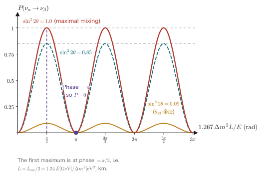
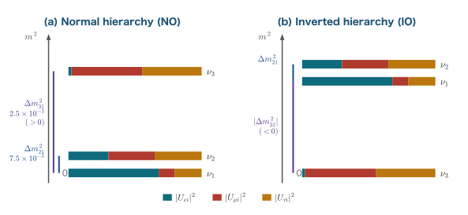
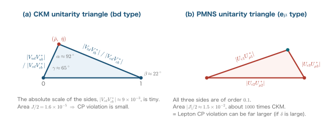
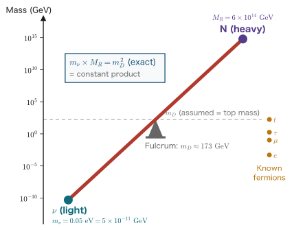

Chapter 14Neutrino Oscillations and Majorana Particles
The Standard Model is built on the assumption that the neutrino mass is zero. As we saw in Chapter 13, every Yukawa coupling to the Higgs field has the form that connects a left-handed doublet with a right-handed singlet, so unless a right-handed neutrino $\nu_R$ is added to the model, there is no way to write a term that gives the neutrino a mass. And $\nu_R$ has no electric charge, no color, and no weak isospin. In other words, it takes part in no gauge interaction at all. In the 1970s there was not a single reason to include such an object.
Then, when the neutrinos coming from the Sun were counted, there were too few. Only one third were there. Starting from this single experimental fact (Davis, 1968), what became clear over the following thirty years was that neutrinos have mass and, moreover, that the flavor eigenstates and the mass eigenstates do not coincide. That is, a $\nu_e$ that has been produced turns into a $\nu_\mu$ or a $\nu_\tau$ while it is in flight. This is neutrino oscillation.
For two generations, the oscillation probability can be written in a single line.
This formula contains the number $1.27$, which experimentalists can use as it stands. In this chapter we follow, to the end and with $\hbar$ and $c$ restored, where this $1.27$ comes from. We then confirm a fundamental limitation of the field: because the mass-squared difference $\Delta m^2$ is merely a “difference of two numbers,” oscillation experiments can never tell us the absolute mass of the neutrino.
The second half concerns Majorana particles. There is a special mass term that is allowed only for particles with no charge, and imposing it erases the distinction between particle and antiparticle. The condition $\psi^c=\psi$ is a strong constraint on the solutions of the Dirac equation derived in Chapter 9, and a field that satisfies it becomes “its own antiparticle.” Since lepton number is violated by two units, neutrinoless double-beta decay $(A,Z)\to(A,Z+2)+2e^-$ can occur. In underground laboratories around the world, high-purity germanium crystals, liquid xenon, and tellurium oxide bolometers are waiting for this decay, which has never been seen.
And then comes the heart of this chapter, Section 14.8. The Majorana condition $\gamma=\gamma^\dagger$ appears routinely in condensed matter physics. The Bogoliubov quasiparticle of a superconductor is a superposition of a particle and a hole, and if its excitation energy is zero, it is exactly its own antiparticle. The end of a Kitaev chain, the vortex core of a $p$-wave superconductor, a combination of an InSb nanowire, an Al thin film, and a magnetic field—these are engineered Majorana modes built from materials. While particle physicists wait for a half-life of $10^{26}$ years, condensed matter physicists are handling the same mathematics inside a dilution refrigerator. Are the two the same thing, or different? In Section 14.8 we honestly sort out the similarities and differences with equations and a table, and we also describe the experimental difficulties that led to a paper retraction in 2021.
- The solar pp chain, an estimate of the neutrino flux $6.5\times10^{10}\ \mathrm{cm^{-2}s^{-1}}$, and the Homestake deficit of $0.30$
- A complete derivation of the oscillation probability from the two-generation mixing matrix, and how the conversion factor $1.267$ follows from $\hbar c=197.327\ \mathrm{MeV\,fm}$
- The oscillation length $L_\mathrm{osc}[\mathrm{km}]=2.48\,E[\mathrm{GeV}]/\Delta m^2[\mathrm{eV^2}]$, and how it determines the baseline design of experiments
- The logic by which the SNO neutral-current measurement proved that “the neutrinos did not disappear but changed identity”
- The MSW effect: the effective Hamiltonian in matter $\sqrt2 G_F n_e$, the resonance condition, and adiabaticity (Landau–Zener)
- $\Delta m_{21}^2=7.5\times10^{-5}\ \mathrm{eV^2}$, $\abs{\Delta m_{31}^2}=2.5\times10^{-3}\ \mathrm{eV^2}$, and the mass-ordering problem
- The standard parametrization of the PMNS matrix, the measured values of $\theta_{12},\theta_{23},\theta_{13},\delta$, and a numerical comparison with the CKM matrix
- The difference between the Dirac mass term and the Majorana mass term, and why $\psi^c=\psi$ is incompatible with charge conservation
- The seesaw mechanism $m_\nu\simeq m_D^2/M_R$ and the meaning of the value $M_R\sim 10^{15}\ \mathrm{GeV}$
- The half-life formula for $0\nu\beta\beta$, the effective mass $m_{\beta\beta}$, the reach of GERDA, KamLAND-Zen, and CUORE, and the requirements on detector materials
- Connection to materials science: the exact solution of the Kitaev chain, the self-conjugacy of BdG quasiparticles, the topological condition $V_Z>\sqrt{\Delta^2+\mu^2}$ for semiconductor nanowires, non-Abelian statistics, and the problem of false positives
14.1 The Solar Neutrino Problem
14.1.1 What is the Sun burning?
The central temperature of the Sun is $1.57\times10^7\ \mathrm{K}$ and its central density is $150\ \mathrm{g/cm^3}$. The net reaction taking place there is the conversion of four protons into one $^4\mathrm{He}$ nucleus.
The electric charge is $+4e$ on the left-hand side and $+2e+2e=+4e$ on the right-hand side, so it balances. The baryon number is $4$ on both sides, so it balances. The lepton number is $0$ on the left and $2\times(-1)+2\times(+1)=0$ on the right, so it balances. Note that the lepton number of $e^+$ is $-1$ and that of $\nu_e$ is $+1$. That is, this reaction is, in net terms, a weak interaction (Chapter 12) in which two protons turn into neutrons, and exactly two neutrinos are always emitted.
This net reaction actually proceeds as a chain of several elementary processes. The main path is called the pp chain.
| Branch | Reaction | $\nu_e$ energy | Fraction of the total flux |
|---|---|---|---|
| pp | $p+p\to d+e^++\nu_e$ | continuous, $E_\mathrm{max}=0.420\ \mathrm{MeV}$ | $91\%$ |
| pep | $p+e^-+p\to d+\nu_e$ | monochromatic, $1.442\ \mathrm{MeV}$ | $0.2\%$ |
| $^7$Be | $^7\mathrm{Be}+e^-\to{}^7\mathrm{Li}+\nu_e$ | monochromatic, $0.862$ / $0.384\ \mathrm{MeV}$ | $7\%$ |
| $^8$B | $^8\mathrm{B}\to{}^8\mathrm{Be}^*+e^++\nu_e$ | continuous, $E_\mathrm{max}\approx15\ \mathrm{MeV}$ | $0.008\%$ |
| hep | ${}^3\mathrm{He}+p\to{}^4\mathrm{He}+e^++\nu_e$ | continuous, $E_\mathrm{max}=18.8\ \mathrm{MeV}$ | $10^{-7}$ |
| CNO | $\beta^+$ decays of $^{13}$N, $^{15}$O, $^{17}$F | continuous, $\lesssim1.7\ \mathrm{MeV}$ | $\approx1\%$ |
What is decisively important here is that the pp neutrinos, which make up most of the flux, have low energies, whereas the high-energy $^8$B neutrinos, which are easier to detect, make up only one ten-thousandth of the total flux. If you mix up which experiment is looking at which branch, the discussion will fail to mesh.
Derivation: Obtaining the flux of solar neutrinos reaching the Earth from the solar constant
Step 1: Convert the solar constant into an energy flux. The energy flux of solar radiation at the Earth’s orbit (the solar constant) is
$$ S = 1.361\ \mathrm{kW/m^2} = 0.1361\ \mathrm{J\,cm^{-2}s^{-1}} $$Using $1\ \mathrm{MeV}=1.602\times10^{-13}\ \mathrm{J}$ to convert to MeV units, we obtain
$$ S = \frac{0.1361}{1.602\times10^{-13}} = 8.50\times10^{11}\ \mathrm{MeV\,cm^{-2}s^{-1}} $$Step 2: Estimate the energy emitted as light per reaction. Of the $26.73\ \mathrm{MeV}$ in Eq. \eqref{eq:14-ppnet}, the neutrinos escape from the Sun without interacting, so what becomes light is the remainder. The average energy of one neutrino is about $0.30\ \mathrm{MeV}$ (low because the pp branch dominates), so two neutrinos carry away $0.6\ \mathrm{MeV}$, and
$$ Q_\gamma \approx 26.73 - 0.6 = 26.1\ \mathrm{MeV} $$reaches the Earth as electromagnetic radiation.
Step 3: Divide. Since two neutrinos are emitted every time light of energy $Q_\gamma$ is emitted,
That is, even at this very moment, 65 billion solar neutrinos pass every second through an area about the size of your thumbnail ($1\ \mathrm{cm^2}$). ∎
Remarkably, this estimate contains no details of the Sun’s internal structure at all. All that was needed was the single fact that “the energy source by which the Sun shines is Eq. \eqref{eq:14-ppnet}.” Therefore the total amount $\Phi_\nu$ is highly reliable. It also agrees to within a few percent with the total flux of the standard solar model (SSM), $6.5\times10^{10}\ \mathrm{cm^{-2}s^{-1}}$ (B16-GS98; of which the pp branch accounts for $6.0\times10^{10}$).
Why? Observing solar neutrinos means seeing the Sun’s “present”
A photon born at the center of the Sun diffuses while undergoing countless Thomson scatterings off electrons, and it takes $10^4$–$10^5$ years to reach the surface. The sunlight we see is energy that was produced in the core tens of thousands of years ago.
Neutrinos are different. Their cross section is only $\sigma\sim10^{-44}\ \mathrm{cm^2}$, so they pass from the center of the Sun to the surface ($7\times10^{10}\ \mathrm{cm}$, average density $1.4\ \mathrm{g/cm^3}$) without scattering at all. Estimating the mean free path gives $\ell = 1/(n\sigma)\sim 1/(10^{24}\times10^{-44})=10^{20}\ \mathrm{cm}$, which is $10^9$ times the solar radius.
Hence solar neutrinos bring us, unchanged, information about the solar core as it was 8 minutes and 19 seconds ago. This is an observational tool in astronomy that has no substitute, and at the same time it is the reason why the experiments are difficult. Passing straight through matter means that they pass straight through the detector in the same way.
14.1.2 Davis’s experiment and the Homestake deficit
In the 1960s, Ray Davis Jr. installed, 1478 m underground in the Homestake gold mine in South Dakota, a tank filled with $615\ \mathrm{t}$ of tetrachloroethylene $\mathrm{C_2Cl_4}$ (dry-cleaning fluid). The reaction he aimed at, proposed by Pontecorvo, is
$$ \begin{equation} \nu_e + {}^{37}\mathrm{Cl} \;\longrightarrow\; {}^{37}\mathrm{Ar} + e^-, \qquad E_\mathrm{th}=0.814\ \mathrm{MeV} \label{eq:14-cl37} \end{equation} $$The threshold of $0.814\ \mathrm{MeV}$ is completely out of reach of the pp neutrinos ($\le0.42\ \mathrm{MeV}$). That is, what Homestake sees is mainly the $^8$B and $^7$Be branches.
Example: How many atoms are produced in one month?
The number of chlorine atoms contained in $615\ \mathrm{t}$ of $\mathrm{C_2Cl_4}$ (molecular weight $165.8$) is
$$ N_\mathrm{Cl} = \frac{6.15\times10^8\ \mathrm{g}}{165.8\ \mathrm{g/mol}}\times4\times6.022\times10^{23} = 8.9\times10^{30} $$Since the natural abundance of $^{37}$Cl is $24.2\%$, $N_{37} = 2.2\times10^{30}$.
As the unit of the reaction rate we use the SNU (Solar Neutrino Unit). It is defined by $1\ \mathrm{SNU}\equiv10^{-36}$ captures per target atom per second. The SSM prediction was $8.5\pm1.8\ \mathrm{SNU}$. The production rate is then
$$ R = 8.5\times10^{-36}\times2.2\times10^{30} = 1.9\times10^{-5}\ \mathrm{s^{-1}} = 1.6\ \mathrm{day^{-1}} $$that is, about 1.6 atoms per day. The half-life of $^{37}$Ar is 35 days, so the saturation value is $1.6\times35/\ln2\approx 81$ atoms. Davis purged the tank with helium every two months, recovered these several tens of argon atoms, and counted them with a proportional counter. This is the chemistry of extracting 30 atoms out of $10^{31}$ atoms.
The measured value was $2.56\pm0.23\ \mathrm{SNU}$, that is, only
$$ \frac{2.56}{8.5} = 0.30 $$of the prediction. This is the solar neutrino problem. ∎
Caution: For 20 years, the “solar model is wrong” was the prevailing view
From 1968 until around 1990, many physicists took this deficit to be an error in the experiment or else an error in the solar model. This is understandable. The flux of $^8$B neutrinos is proportional to about the $18$th power of the solar central temperature $T_c$. Lowering $T_c$ by a mere $5\%$ reduces the flux to $0.95^{18}=0.40$, which would explain the deficit.
What ruled out this possibility was helioseismology. When the sound-speed profile is determined as an inverse problem from the oscillation modes of the solar surface, it agrees with the SSM prediction to a precision of $0.1\%$. There is no room to move $T_c$ by as much as $5\%$. It is not “the Sun that is wrong” but “the neutrinos that are wrong.”
14.1.3 The gallium experiments, Kamiokande, and Super-Kamiokande
To verify and reinforce the Homestake result, experiments with different thresholds and different principles followed.
| Experiment | Reaction | Threshold | Branches to which it is sensitive | Observed/SSM |
|---|---|---|---|---|
| Homestake ($^{37}$Cl) | $\nu_e\,{}^{37}\mathrm{Cl}\to{}^{37}\mathrm{Ar}\,e^-$ | $0.814\ \mathrm{MeV}$ | $^8$B, $^7$Be | $0.30\pm0.03$ |
| GALLEX / GNO ($^{71}$Ga) | $\nu_e\,{}^{71}\mathrm{Ga}\to{}^{71}\mathrm{Ge}\,e^-$ | $0.233\ \mathrm{MeV}$ | all branches, including pp | $0.54\pm0.05$ |
| SAGE ($^{71}$Ga) | same as above | $0.233\ \mathrm{MeV}$ | same as above | $0.53\pm0.05$ |
| Kamiokande-II (water) | $\nu_x e^-\to\nu_x e^-$ | $\approx7\ \mathrm{MeV}$ | $^8$B | $0.49\pm0.09$ |
| Super-Kamiokande (water) | $\nu_x e^-\to\nu_x e^-$ | $\approx4.5\ \mathrm{MeV}$ | $^8$B | $0.465\pm0.015$ |
| SNO (heavy water, CC) | $\nu_e d\to p\,p\,e^-$ | $1.44\ \mathrm{MeV}$ | $^8$B ($\nu_e$ only) | $0.35\pm0.02$ |
| SNO (heavy water, NC) | $\nu_x d\to p\,n\,\nu_x$ | $2.22\ \mathrm{MeV}$ | $^8$B (all flavors) | $1.01\pm0.12$ |
An important structure is hidden in Table 14.2. The degree of the deficit differs from experiment to experiment. It is $0.54$ for gallium, $0.47$ for water Cherenkov, and $0.30$ for chlorine—it is not simply that “the neutrinos are reduced to one third”; the amount of reduction depends on the energy. No modification of the solar model can explain this pattern. It must be a property of the neutrinos themselves. The MSW effect, which we study in Section 14.3, predicts precisely this energy dependence.
Physical Meaning: Kamiokande took a “photograph of the Sun”
Kamiokande-II detected, with photomultiplier tubes, the Cherenkov light of electrons knocked out by $\nu_x + e^-\to\nu_x+e^-$ (elastic scattering) in $3000\ \mathrm{t}$ of pure water. This method has three advantages that radiochemical methods do not have.
- Real time: we know when the neutrino arrived.
- Directional information: the knocked-out electron is scattered forward in the direction of the incident neutrino, so the direction of arrival is known. Kamiokande obtained an “image of the Sun taken with neutrinos.” It was the first time that humankind imaged an astronomical object with something other than electromagnetic waves.
- Energy information: the energy of the electron is known from the amount of light in the Cherenkov ring.
There are drawbacks as well, however. Elastic scattering also occurs for $\nu_\mu,\nu_\tau$ (through the neutral current of $Z$ exchange), so the flavors cannot be distinguished. Moreover, the cross section is small, $\sigma(\nu_\mu e)/\sigma(\nu_e e)\approx0.155$, so if $\nu_e$ has turned into $\nu_\mu$ the flux is underestimated. This “halfway” nature later became the design motivation of SNO (Section 14.3).
14.2 The Theory of Oscillations
14.2.1 Flavor eigenstates and mass eigenstates
The idea of mixing is exactly the same as that of the CKM matrix in Chapter 12. There, the “flavor eigenstates” $d',s',b'$ produced by the weak interaction did not coincide with the “mass eigenstates” $d,s,b$, which are the eigenstates of free propagation, and the two sets were related by a unitary matrix. Let us suppose that the same thing happens for leptons.
Definition: Flavor eigenstates and mass eigenstates
A flavor eigenstate $\ket{\nu_\alpha}$ ($\alpha=e,\mu,\tau$) is a state that is created or annihilated together with the charged lepton $\ell_\alpha$ at a weak-interaction vertex. For example, the state born in $\pi^+\to\mu^+\nu_\mu$ is $\ket{\nu_\mu}$.
A mass eigenstate $\ket{\nu_i}$ ($i=1,2,3$) is an eigenstate of the free Hamiltonian and has a definite mass $m_i$. While propagating in vacuum, it is the mass eigenstate that moves along without changing its form, acquiring the phase $\ee^{-\ii E_it}$.
The two sets are related by a unitary matrix $U$ (the PMNS matrix, Section 14.5):
$$ \begin{equation} \ket{\nu_\alpha} = \sum_i U_{\alpha i}^{*}\,\ket{\nu_i} \label{eq:14-mixdef} \end{equation} $$The complex conjugate appears because this is a relation for state kets, not for field operators (for the fields, $\nu_{\alpha L}=\sum_iU_{\alpha i}\nu_{iL}$). For a real matrix with two generations, this distinction disappears.
Why can the two bases differ?
A situation in which “what is produced” differs from “what propagates” is not unusual in condensed matter physics. For example, consider a system in which the $d$ orbitals are split by a crystal field. The states selected by the optical-transition selection rules (a set of real orbitals such as $\ket{x^2-y^2}$) do not coincide with the eigenstates of the Hamiltonian that includes the spin–orbit interaction (for $t_{2g}$, states classified by $j_\mathrm{eff}=1/2,3/2$). A state prepared in the former is a superposition of the latter, and under time evolution it turns into a different real orbital.
What happens with neutrinos is the same thing. The only difference is that the offset between the two bases is the very large angle $\theta_{12}\approx34^\circ$. This is much larger than the quark Cabibbo angle $\theta_C\approx13^\circ$.
14.2.2 The two-generation oscillation probability — complete derivation
First we grasp the essence with two generations. Suppose that $\nu_e$ and $\nu_\mu$, and $\nu_1$ and $\nu_2$, are related by a real orthogonal matrix with a single mixing angle $\theta$.
Derivation: $P(\nu_e\to\nu_\mu)=\sin^22\theta\,\sin^2(\Delta m^2L/4E)$
Step 1: Write down the mixing. A two-dimensional orthogonal matrix is a rotation matrix.
$$ \begin{equation} \begin{pmatrix}\ket{\nu_e}\\ \ket{\nu_\mu}\end{pmatrix} = \begin{pmatrix}\cos\theta & \sin\theta\\ -\sin\theta & \cos\theta\end{pmatrix} \begin{pmatrix}\ket{\nu_1}\\ \ket{\nu_2}\end{pmatrix} \label{eq:14-2gen} \end{equation} $$That is, $\ket{\nu_e}=\cos\theta\ket{\nu_1}+\sin\theta\ket{\nu_2}$ and $\ket{\nu_\mu}=-\sin\theta\ket{\nu_1}+\cos\theta\ket{\nu_2}$. The rotation matrix is an orthogonal matrix satisfying $R^{T}R=\mathbb{1}$ (its columns are orthonormal), and as a real matrix it is unitary (its determinant is $\cos^2\theta+\sin^2\theta=1$). Note, however, that a determinant equal to $1$ is not a proof of unitarity: $\mathrm{diag}(2,1/2)$ also has determinant $1$.
Step 2: Let the state evolve in time. Let $\ket{\nu(0)}=\ket{\nu_e}$ at $t=0$. Each mass eigenstate rotates its phase with its own energy $E_i$, so
$$ \ket{\nu(t)} = \cos\theta\,\ee^{-\ii E_1t}\ket{\nu_1} + \sin\theta\,\ee^{-\ii E_2t}\ket{\nu_2} $$where $E_i=\sqrt{\bm{p}^2+m_i^2}$. Different masses mean different energies, and hence different speeds of phase rotation. This is all there is to oscillation.
Step 3: Project onto the $\nu_\mu$ component. Solving Eq. \eqref{eq:14-2gen} in reverse gives $\ket{\nu_1}=\cos\theta\ket{\nu_e}-\sin\theta\ket{\nu_\mu}$ and $\ket{\nu_2}=\sin\theta\ket{\nu_e}+\cos\theta\ket{\nu_\mu}$. Therefore $\braket{\nu_\mu|\nu_1}=-\sin\theta$ and $\braket{\nu_\mu|\nu_2}=\cos\theta$, and
$$ \mathcal{A}_{e\to\mu}(t) \equiv \braket{\nu_\mu|\nu(t)} = -\cos\theta\sin\theta\,\ee^{-\ii E_1t} + \sin\theta\cos\theta\,\ee^{-\ii E_2t} $$ $$ = \sin\theta\cos\theta\left(\ee^{-\ii E_2t}-\ee^{-\ii E_1t}\right) $$If $\theta=0$ the amplitude is zero (without mixing, no transformation occurs), and it is also zero if $E_1=E_2$ (if the masses are degenerate, no transformation occurs). These two conditions can already be read off.
Step 4: Take the square of the absolute value. Factor out the common factor $\ee^{-\ii E_1t}$.
$$ \mathcal{A} = \sin\theta\cos\theta\,\ee^{-\ii E_1t}\left(\ee^{-\ii(E_2-E_1)t}-1\right) $$Since $\abs{\ee^{-\ii E_1t}}=1$, it drops out. Writing $\phi\equiv(E_2-E_1)t$,
$$ \abs{\ee^{-\ii\phi}-1}^2 = (\cos\phi-1)^2+\sin^2\phi = 2-2\cos\phi = 4\sin^2\frac{\phi}{2} $$In the last step we used the half-angle formula $1-\cos\phi=2\sin^2(\phi/2)$. Also, since $\sin\theta\cos\theta=\tfrac12\sin2\theta$, we have $(\sin\theta\cos\theta)^2=\tfrac14\sin^22\theta$. Therefore
$$ \begin{equation} P(\nu_e\to\nu_\mu) = \frac14\sin^22\theta\times4\sin^2\frac{\phi}{2} = \sin^22\theta\,\sin^2\!\left(\frac{(E_2-E_1)t}{2}\right) \label{eq:14-Pmid} \end{equation} $$Step 5: Evaluate the energy difference in the ultrarelativistic approximation. Neutrino masses are $\lesssim0.1\ \mathrm{eV}$, whereas the energies handled in experiments are from MeV to GeV. Therefore $m_i\ll p$ holds overwhelmingly, and the square root can be expanded.
$$ E_i = \sqrt{p^2+m_i^2} = p\sqrt{1+\frac{m_i^2}{p^2}} \simeq p + \frac{m_i^2}{2p} $$The error of the expansion is $O(m_i^4/p^3)$, which for $m\sim0.1\ \mathrm{eV}$ and $p\sim1\ \mathrm{GeV}$ is a relative error of $10^{-20}$. Assuming the same momentum $p$ (the validity of this assumption is discussed in the Caution box below),
$$ E_2-E_1 \simeq \frac{m_2^2-m_1^2}{2p} \equiv \frac{\Delta m^2}{2E} $$In the last step we set $p\simeq E$ (because the particle is ultrarelativistic, the difference between momentum and energy is a higher-order effect of $O(m^2/E)$).
Step 6: Convert time into flight distance. Since the neutrino travels at nearly the speed of light, $t\simeq L$ (natural units, $c=1$). Hence $\phi/2 = \Delta m^2L/(4E)$, and
And since the probabilities sum to 1 for two generations, the survival probability is
$$ \begin{equation} P(\nu_e\to\nu_e) = 1 - \sin^22\theta\,\sin^2\!\left(\frac{\Delta m^2L}{4E}\right) \label{eq:14-Psurv} \end{equation} $$∎
Physical Meaning: The two “amplitudes” and the “period” in this formula
Equation \eqref{eq:14-Posc} is a product of two factors.
- $\sin^22\theta$ determines the depth of the oscillation. It depends only on the mixing angle $\theta$, and not on the distance or the energy. If $\theta=45^\circ$ (maximal mixing), then $\sin^22\theta=1$, and there are moments at which $\nu_e$ turns completely into $\nu_\mu$.
- $\sin^2(\Delta m^2L/4E)$ determines the phase of the oscillation. It depends only on $\Delta m^2$.
Thanks to this separation, experiments can determine $\theta$ from the “depth” and $\Delta m^2$ from the “period,” independently.
And there is a decisive consequence. $\Delta m^2=m_2^2-m_1^2$ is a difference, not $m_1$ or $m_2$ themselves. Whether $(m_1,m_2)=(0,\ 0.00866)\ \mathrm{eV}$ or $(1.0000,\ 1.0000375)\ \mathrm{eV}$, $\Delta m^2$ comes out the same, $7.50\times10^{-5}\ \mathrm{eV^2}$. No matter how many tens of thousands of times oscillation experiments are repeated, the absolute mass of the neutrino can never be learned from them. This is why $\beta$-decay endpoint measurements and cosmology are separately needed in Section 14.4.
14.2.3 The origin of the number $1.27$
Equation \eqref{eq:14-Posc} is written in natural units ($\hbar=c=1$). Experimentalists measure $\Delta m^2$ in $\mathrm{eV^2}$, $L$ in $\mathrm{km}$, and $E$ in $\mathrm{GeV}$. With these three units mixed together the phase cannot be computed, so we need to restore $\hbar$ and $c$.
Derivation: The conversion factor $1.267$
Step 1: Restore $\hbar$ and $c$. We do this by dimensional analysis. The phase $\phi/2$ must be dimensionless. Since $\Delta m^2$ is a mass squared, we first multiply by $c$ to convert it to an energy: $\Delta m^2c^4$. $L$ is a length, and $E$ is an energy.
$$ \frac{\Delta m^2c^4\,L}{E} \quad\to\quad \frac{[\mathrm{eV^2}][\mathrm{m}]}{[\mathrm{eV}]} = [\mathrm{eV\,m}] $$The dimension $\mathrm{eV\cdot m}$ is left over. The only thing that can cancel it is $\hbar c$ (dimension $\mathrm{eV\cdot m}$). Hence
$$ \begin{equation} \frac{\Delta m^2L}{4E}\ \Big|_{\hbar=c=1} \;\longrightarrow\; \frac{\Delta m^2c^4\,L}{4\,\hbar c\,E} \label{eq:14-restore} \end{equation} $$Step 2: Write $\hbar c$ in eV·m. By the convention (Appendix B), $\hbar c=197.327\ \mathrm{MeV\,fm}$. Since $1\ \mathrm{MeV}=10^6\ \mathrm{eV}$ and $1\ \mathrm{fm}=10^{-15}\ \mathrm{m}$,
$$ \hbar c = 197.327\times10^{6}\ \mathrm{eV}\times10^{-15}\ \mathrm{m} = 1.97327\times10^{-7}\ \mathrm{eV\,m} $$Step 3: Substitute the experimentalists’ units. Writing $\Delta m^2$ as the number $\widetilde{\Delta m^2}$ in units of $\mathrm{eV^2}$, $L$ as the number $\widetilde L$ in km ($L=10^3\widetilde L\ \mathrm{m}$), and $E$ as the number $\widetilde E$ in GeV ($E=10^9\widetilde E\ \mathrm{eV}$), we get
$$ \frac{\Delta m^2c^4L}{4\hbar cE} =\frac{\widetilde{\Delta m^2}\ \mathrm{eV^2}\times10^3\widetilde L\ \mathrm{m}} {4\times1.97327\times10^{-7}\ \mathrm{eV\,m}\times10^{9}\widetilde E\ \mathrm{eV}} $$The units cancel cleanly. Computing only the coefficients, the denominator is
$$ 4\times1.97327\times10^{-7}\times10^{9} = 4\times197.327 = 789.31 $$and since the numerator’s coefficient is $10^3$,
This is the origin of $1.27$. It is nothing but a product of the natural constant $\hbar c=197.327\ \mathrm{MeV\,fm}$ and the human convenience of km, GeV, and eV$^2$. ∎
Therefore the practical form is
Note that the same coefficient $1.267$ can be used when $L$ is measured in m and $E$ in MeV (because the factors of $10^{-3}$ cancel between numerator and denominator). This is convenient for reactor experiments ($L\sim1\ \mathrm{km}$, $E\sim4\ \mathrm{MeV}$).
Definition: Oscillation length
The distance over which the oscillation probability goes through one full cycle, $0\to$ maximum $\to0$, is called the oscillation length $L_\mathrm{osc}$. It is the distance over which the phase $\Delta m^2L/(4E)$ advances by $\pi$ (the period of $\sin^2$ is $\pi$).
$$ \frac{\Delta m^2 L_\mathrm{osc}}{4E}=\pi \quad\Longrightarrow\quad L_\mathrm{osc} = \frac{4\pi E}{\Delta m^2} $$In practical units, from Eq. \eqref{eq:14-127} we have $1.267\,\widetilde{\Delta m^2}\widetilde{L}_\mathrm{osc}/\widetilde E=\pi$, so
The first oscillation maximum lies at $L_\mathrm{osc}/2$. Experimental baselines are designed with this formula.
Example: Experimental baselines are fixed by Eq. \eqref{eq:14-Losc}
Assume $\Delta m_{31}^2=2.5\times10^{-3}\ \mathrm{eV^2}$ (atmospheric-type).
(a) T2K. The $\nu_\mu$ beam produced at J-PARC has its peak tuned to $E\approx0.6\ \mathrm{GeV}$ by the off-axis method. The first maximum is at
$$ \frac{L_\mathrm{osc}}{2} = \frac{2.48}{2}\times\frac{0.6}{2.5\times10^{-3}} = 1.24\times240 = 298\ \mathrm{km} $$The actual distance between J-PARC and Super-Kamiokande is $295\ \mathrm{km}$. This is no coincidence. The beam energy was designed to match the location of Kamioka.
(b) Daya Bay (reactor $\bar\nu_e$, $E\approx4\ \mathrm{MeV}=4\times10^{-3}\ \mathrm{GeV}$).
$$ \frac{L_\mathrm{osc}}{2}=1.24\times\frac{4\times10^{-3}}{2.5\times10^{-3}} = 1.98\ \mathrm{km} $$The far detector of Daya Bay was placed at about $1.65\ \mathrm{km}$, RENO at $1.38\ \mathrm{km}$, and Double Chooz at $1.05\ \mathrm{km}$. All of them are near the optimal point for measuring $\theta_{13}$.
(c) KamLAND ($\Delta m_{21}^2=7.5\times10^{-5}$, $E\approx3.6\ \mathrm{MeV}$).
$$ \frac{L_\mathrm{osc}}{2}=1.24\times\frac{3.6\times10^{-3}}{7.5\times10^{-5}} = 59.5\ \mathrm{km} $$The effective distance from the nuclear reactors across Japan to Kamioka is about $180\ \mathrm{km}$, which is roughly three times the first maximum. That is why KamLAND saw several peaks and valleys in the spectrum (Section 14.3). ∎

Caution: The “same momentum” assumption and wave-packet decoherence
In Step 5 we assumed that “$\nu_1$ and $\nu_2$ have the same momentum $p$.” Strictly speaking, this is not correct. In reality the kinematics of the parent particle (such as $\pi^+$) fixes both $E$ and $p$, so if the masses differ, both differ slightly. However, it can be shown that whether one assumes the “same $E$” or the “same $p$,” the leading term of the phase is the same, $\Delta m^2L/2E$ (the difference is $O(m^4/E^4)$). Therefore it is not a problem in practice. The rigorous treatment by quantum field theory (the wave-packet formalism) gives the same answer.
The wave-packet picture, however, gives another important consequence. The mass eigenstates have slightly different velocities ($v_i\simeq1-m_i^2/2E^2$), so over a long flight the two wave packets become spatially separated. Once separated, they cannot interfere, the oscillation disappears, and the probability settles to the mean value $1/2$ of $\sin^2$:
$$ P(\nu_e\to\nu_e)\ \xrightarrow{\ \text{decoherence}\ }\ 1-\frac12\sin^22\theta $$This is the behavior in the region beyond the coherence length. At a distance of $1.5\times10^8\ \mathrm{km}$ from the Sun to the Earth, the distribution of $L/E$ spreads out anyway and the phase is averaged, so this formula is effectively the one used. In condensed matter physics, it is a phenomenon in which wave packets of modes with different group velocities separate spatially and interference is lost, and it is close to the $T_2^*$ process, in which an apparent decay arises from the distribution of $L/E$ (inhomogeneous broadening) in pulse spectroscopy. It differs in mechanism, however, from the irreversible phase relaxation ($T_2$) caused by coupling to the environment. Here there is no dissipation at all, and the phase information can in principle be recovered.
14.2.4 Extension to three generations
With three generations, the mixing matrix becomes a $3\times3$ unitary matrix $U$. The calculation of the amplitude proceeds by exactly the same steps as for two generations.
Derivation: The three-generation oscillation probability
Step 1: Write the amplitude. From Eq. \eqref{eq:14-mixdef}, $\ket{\nu_\alpha}=\sum_iU^*_{\alpha i}\ket{\nu_i}$, and the inverse transformation is $\ket{\nu_i}=\sum_\beta U_{\beta i}\ket{\nu_\beta}$. Therefore
$$ \mathcal{A}_{\alpha\to\beta} = \sum_i U^*_{\alpha i}\,\ee^{-\ii E_it}\,U_{\beta i} $$Step 2: Expand $\abs{\mathcal{A}}^2$.
$$ P_{\alpha\beta}=\sum_{i,j}U^*_{\alpha i}U_{\beta i}U_{\alpha j}U^*_{\beta j}\, \ee^{-\ii(E_i-E_j)t} $$Step 3: Split into the terms with $i=j$ and the terms with $i\neq j$. The sum over $i=j$ collapses to the form $\delta_{\alpha\beta}$ when the unitarity relation $\sum_i U^*_{\alpha i}U_{\beta i}=\delta_{\alpha\beta}$ is used. Sorting the $i\neq j$ terms into real and imaginary parts and substituting $E_i-E_j=\Delta m_{ij}^2/2E$, we obtain
∎
Physical Meaning: The third term is CP violation
Look at the third term ($\mathrm{Im}$ term) of Eq. \eqref{eq:14-P3gen}. Since $\sin$ is an odd function, this term is sensitive to the sign of $L$, that is, to the direction of time. And the replacement $\nu\to\bar\nu$ means $U\to U^*$, so the sign of $\mathrm{Im}[\cdots]$ is reversed. That is,
$$ P(\nu_\alpha\to\nu_\beta) - P(\bar\nu_\alpha\to\bar\nu_\beta) = 4\sum_{i>j}\mathrm{Im}[\cdots]\sin\!\left(\frac{\Delta m^2_{ij}L}{2E}\right)\ne0 $$This difference is CP violation in the lepton sector (see the definition of the $CP$ transformation in Chapter 6). If the matrix $U$ is real, this term vanishes. Therefore CP violation is directly tied to the existence of the complex phase $\delta$ of $U$. It is precisely this term that T2K and NOvA, and Hyper-Kamiokande and DUNE (now under construction), are aiming at.
Note also that with two generations there is no room to introduce a phase into a $2\times2$ real orthogonal matrix (even if one is introduced, it can be removed by redefinition), so the third term is identically zero. CP violation requires at least three generations. The same logic that Kobayashi and Maskawa pointed out for quarks holds for leptons just as it is.
Even with three generations, the actual analysis is often adequately handled by a “two-generation approximation.” The reason is that $\Delta m_{21}^2=7.5\times10^{-5}\ \mathrm{eV^2}$ and $\abs{\Delta m_{31}^2}=2.5\times10^{-3}\ \mathrm{eV^2}$ differ by a factor of 33. For example, in atmospheric neutrinos and accelerator experiments ($L/E\sim500\ \mathrm{km/GeV}$), $\Delta m_{21}^2L/4E\ll1$, so the solar term lies dormant and only the $\Delta m_{31}^2$ term matters. Conversely, for solar neutrinos and KamLAND, the $\Delta m_{31}^2$ term oscillates rapidly and is averaged out, and only the $\Delta m_{21}^2$ term remains. Thanks to the separation of the two scales, the mixing parameters could be measured one at a time, in order.
14.3 Confirmation of Oscillations and the MSW Effect
14.3.1 Atmospheric neutrinos — those coming from above differ from those coming from below
When cosmic-ray protons strike atomic nuclei in the upper atmosphere, large numbers of $\pi^\pm$ are produced, and they decay as $\pi^+\to\mu^+\nu_\mu$ and $\mu^+\to e^+\nu_e\bar\nu_\mu$. Naively, therefore,
$$ \frac{N(\nu_\mu+\bar\nu_\mu)}{N(\nu_e+\bar\nu_e)} \simeq 2 $$should hold (two $\nu_\mu$ for each $\nu_e$). Because the uncertainty in the absolute value of the cosmic-ray flux cancels between numerator and denominator, this ratio can be predicted to an accuracy of about $5\%$. The measured value, however, was about $1.3$; that is, about 30% of the $\nu_\mu$ were missing.
In 1998, Super-Kamiokande presented decisive evidence: the zenith-angle dependence. A neutrino born directly above the detector has a flight distance of about $15\ \mathrm{km}$, whereas one born directly below (in the atmosphere on the opposite side of the Earth) has a flight distance of about $12\,800\ \mathrm{km}$. With the same detector and neutrinos of the same energy, the flight distance alone can thus be varied by a factor of order $10^3$.
Example: The up–down asymmetry in Super-Kamiokande
Suppose $E\approx1\ \mathrm{GeV}$, $\Delta m_{31}^2=2.5\times10^{-3}\ \mathrm{eV^2}$, and $\sin^22\theta_{23}\approx1$. The phase in Eq. \eqref{eq:14-Ppractical} is evaluated as follows.
Downward-going events (neutrinos born in the atmosphere directly above and coming down, $L=15\ \mathrm{km}$):
$$ \Phi = 1.267\times2.5\times10^{-3}\times\frac{15}{1} = 0.0475\ \mathrm{rad} $$ $$ P(\nu_\mu\to\nu_\mu) = 1-\sin^2(0.0475) = 1-0.00226 = 0.998 $$There is almost no oscillation.
Upward-going events (neutrinos born on the far side of the Earth, passing through the Earth and thrusting up from below, $L=12\,800\ \mathrm{km}$):
$$ \Phi = 1.267\times2.5\times10^{-3}\times12\,800 = 40.5\ \mathrm{rad} $$The value $40.5\ \mathrm{rad}$ is 12.9 times $\pi$. Because it is smeared out by the energy and angular resolutions, $\sin^2\Phi$ is replaced by its mean value $1/2$:
$$ P(\nu_\mu\to\nu_\mu) = 1-\frac12\sin^22\theta_{23} \approx 0.5 $$That is, the $\nu_\mu$ that have passed through the Earth are reduced by half. The $\nu_e$, on the other hand, are hardly reduced at all (because the mixing associated with $\Delta m_{31}^2$ is small, $\sin^22\theta_{13}=0.086$). Super-Kamiokande saw exactly this pattern. Moreover, there was no increase in $\nu_e$ corresponding to the “vanished $\nu_\mu$.” They went to $\nu_\tau$ (producing a $\tau$ requires $3.5\ \mathrm{GeV}$ or more, so these are hard to see directly). ∎
Why was the zenith-angle dependence “decisive”?
The prediction of the absolute flux retains an uncertainty of about $20\%$ from the cosmic-ray spectrum and the hadron-production model. Therefore the observation that “30% of the $\nu_\mu$ are missing” by itself leaves an escape route: an error in the theoretical calculation.
If, however, we divide events in the same energy range in the same detector by zenith angle, the absolute value of the flux almost cancels in the ratio (the Earth is spherically symmetric, and above a few GeV the effect of the geomagnetic cutoff on the primary cosmic rays is small and the incidence is nearly isotropic, so the production of $\nu_\mu$ coming from above and of $\nu_\mu$ coming from below are equal to within a few percent. In the sub-GeV region the geomagnetic effect must be evaluated separately). The experimental systematic errors are also almost common to both. All that remains is the difference in flight distance. Since a clear $L$ dependence was seen there, there was no way to explain it other than oscillation.
This is also a general lesson of experimental physics: measurements of absolute values depend on the model, while measurements of ratios do not. It is the same in materials characterization: polarization ratios and temperature dependences are far more reliable than the absolute value of the total reflectance.
14.3.2 SNO — they did not vanish; they changed
What settled the solar neutrino problem was the Sudbury Neutrino Observatory (SNO) in Canada. The idea was simple and powerful: if heavy water $\mathrm{D_2O}$ is used, the same detector can simultaneously make a “measurement that counts only $\nu_e$” and a “measurement that counts all flavors.”
Definition: The three reaction channels of SNO
In $1000\ \mathrm{t}$ of heavy water (borrowed from Atomic Energy of Canada Limited at the time, at a market value of 300 million Canadian dollars), the following three are measured simultaneously.
- CC (charged current): $\nu_e + d \to p + p + e^-$. $W$ exchange. Only $\nu_e$ contributes (because there is not enough energy to make a $\mu$ from a $\nu_\mu$). Flux $\Phi_\mathrm{CC}=\Phi(\nu_e)$.
- NC (neutral current): $\nu_x + d \to p + n + \nu_x$. $Z$ exchange. It merely supplies the deuteron binding energy $2.22\ \mathrm{MeV}$ to break it up, so it occurs with the same cross section for all three flavors. Flux $\Phi_\mathrm{NC}=\Phi(\nu_e)+\Phi(\nu_\mu)+\Phi(\nu_\tau)$.
- ES (elastic scattering): $\nu_x+e^-\to\nu_x+e^-$. $\nu_e$ contributes through both $W$ and $Z$, whereas $\nu_{\mu,\tau}$ contribute through $Z$ only. Since the cross-section ratio is $\sigma(\nu_{\mu,\tau}e)/\sigma(\nu_ee)=0.155$, $\Phi_\mathrm{ES}=\Phi(\nu_e)+0.155\,\Phi(\nu_{\mu,\tau})$.
Derivation: Extracting $\Phi(\nu_{\mu,\tau})$ from the three SNO measurements
Step 1: List the measured values (2002, $^8$B component, in units of $10^6\ \mathrm{cm^{-2}s^{-1}}$).
$$ \Phi_\mathrm{CC}=1.76\pm0.06,\qquad \Phi_\mathrm{ES}=2.39\pm0.24,\qquad \Phi_\mathrm{NC}=5.09\pm0.44 $$Step 2: Take the difference between CC and NC. From the definitions,
$$ \Phi(\nu_{\mu,\tau}) = \Phi_\mathrm{NC}-\Phi_\mathrm{CC} = 5.09-1.76 = 3.33\ \ (\times10^6\ \mathrm{cm^{-2}s^{-1}}) $$The error, summing the independent components in quadrature, is $\sqrt{0.44^2+0.06^2}=0.444$. The published value that SNO obtained from a simultaneous fit to the three measurements is
$$ \Phi(\nu_{\mu,\tau}) = \left[3.41\pm0.45(\mathrm{stat})^{+0.48}_{-0.45}(\mathrm{syst})\right]\times10^6\ \mathrm{cm^{-2}s^{-1}} $$and its central value agrees well with the difference $3.33$ above, and its statistical error with the rough estimate $0.444$ (because it comes from a simultaneous fit, the central value differs slightly).
Dividing by $\sqrt{0.45^2+0.48^2}=0.66$, the quadrature sum of the statistical and systematic errors, we find that the value is $5.3\sigma$ away from zero (the significance published by SNO). Dividing by the statistical error alone would give $7.6\sigma$, but that is an overestimate that ignores the systematic error, so it must not be quoted. The nuclear fusion reactions in the Sun produce only $\nu_e$ (Eq. \eqref{eq:14-ppnet}). Yet $\nu_\mu$ and $\nu_\tau$ are arriving at the Earth. They changed along the way.
Step 3: Compare the total flux with the SSM.
$$ \frac{\Phi_\mathrm{NC}}{\Phi_\mathrm{SSM}}=\frac{5.09}{5.05}=1.008 $$The two agree perfectly within the errors. Not a single neutrino has vanished. What Homestake and Super-Kamiokande saw was an apparent deficit caused by counting only $\nu_e$. Bahcall’s standard solar model had been correct for thirty years.
Step 4: Obtain the survival probability.
$$ P_{ee} = \frac{\Phi_\mathrm{CC}}{\Phi_\mathrm{NC}} = \frac{1.76}{5.09}=0.346 $$The survival probability of $^8$B neutrinos (average $\approx7\ \mathrm{MeV}$) is about $1/3$. ∎
Caution: $P_{ee}=0.35$ cannot be explained by vacuum oscillations
The story does not end here. The average of the two-generation vacuum oscillation (replacing $\sin^2$ in Eq. \eqref{eq:14-Psurv} by $1/2$) is
$$ \braket{P_{ee}}_\mathrm{vac} = 1-\frac12\sin^22\theta_{12} $$Inserting $\sin^2\theta_{12}=0.307$ ($\theta_{12}=33.6^\circ$), we have $\sin2\theta_{12}=\sin(67.3^\circ)=0.922$ and $\sin^22\theta_{12}=0.851$, so
$$ \braket{P_{ee}}_\mathrm{vac} = 1-0.426 = 0.574 $$This does not match the measured $0.35$ at all. Moreover, the average of a vacuum oscillation has a lower bound: in principle it cannot fall below $0.5$ (because $\sin^22\theta\le1$). A value of $0.35$ can never be obtained from vacuum oscillations.
On the other hand, Borexino’s measurement of pp neutrinos on the low-energy side ($\le0.42\ \mathrm{MeV}$) gives $P_{ee}=0.57\pm0.10$, which agrees perfectly with the vacuum average $0.574$. That is, the physics differs with energy. The explanation of this “bend” is the MSW effect.
14.3.3 KamLAND and accelerator experiments
Can the results of SNO and Super-Kamiokande be reproduced not with an astronomical, “uncontrollable source” but with a man-made source? This was the challenge of the 2000s.
| Experiment | Source | $L$ | $E$ | Parameters measured | Result |
|---|---|---|---|---|---|
| KamLAND | Japanese reactors, $\bar\nu_e$ | effective $180\ \mathrm{km}$ | $\sim3.6\ \mathrm{MeV}$ | $\Delta m_{21}^2,\theta_{12}$ | $\bar\nu_e$ reduced to $0.6$; the oscillation pattern versus $L/E$ was observed directly |
| K2K | KEK $\nu_\mu$ beam | $250\ \mathrm{km}$ | $\sim1.3\ \mathrm{GeV}$ | $\Delta m_{32}^2$ | 112 events (expected $158.1^{+9.2}_{-8.6}$); $\nu_\mu$ disappearance confirmed at $4.3\sigma$ (final result, 2006) |
| MINOS | Fermilab NuMI | $735\ \mathrm{km}$ | $\sim3\ \mathrm{GeV}$ | $\Delta m_{32}^2$ | $\abs{\Delta m_{32}^2}$ determined to $4\%$ precision |
| T2K | J-PARC, off-axis $2.5^\circ$ | $295\ \mathrm{km}$ | $0.6\ \mathrm{GeV}$ | $\theta_{23},\theta_{13},\delta$ | First observation of $\nu_\mu\to\nu_e$ appearance (2011/2013); constraints on the CP phase |
| NOvA | Fermilab NuMI, off-axis | $810\ \mathrm{km}$ | $2\ \mathrm{GeV}$ | $\theta_{23},\delta$, mass ordering | Long baseline where matter effects matter. Combined with T2K, it resolves the degeneracy |
| Daya Bay | Chinese reactors | $0.4$/$1.65\ \mathrm{km}$ | $\sim4\ \mathrm{MeV}$ | $\theta_{13}$ | $\sin^22\theta_{13}=0.0851\pm0.0024$ (highest precision) |
Physical Meaning: KamLAND let us see “oscillation” with our own eyes
All the earlier experiments were measurements of a deficit, a count “lower than expected.” Had only a deficit been observed, other explanations would in principle have been possible: that the neutrinos decayed, or that they escaped into extra dimensions.
KamLAND measured the energy of each $\bar\nu_e$ one by one and plotted the survival probability against $L_0/E$ (with the effective baseline $L_0=180\ \mathrm{km}$). There peaks and valleys appeared in a row. This is exactly the $\sin^2$ of Eq. \eqref{eq:14-Psurv}. It is not a monotonic decrease: the probability falls, comes back, and falls again. This shape cannot be produced by anything other than oscillation, because neutrino decay would give a monotonic decrease $\ee^{-L/\lambda}$.
In addition, reactors emit only $\bar\nu_e$, whereas SNO observes $\nu_e$. If the CPT theorem (Chapter 6) holds, the oscillation parameters of the two should coincide, and in fact they did. This was the moment when the value of $\Delta m_{21}^2$ agreed between two completely independent systems, the Sun (astronomical) and reactors (man-made).
14.3.4 The MSW effect — oscillations in matter
What Wolfenstein (1978) and Mikheyev and Smirnov (1985) pointed out is the following single point: in matter, only $\nu_e$ feels an extra potential.
Derivation: The matter potential $V=\sqrt2G_Fn_e$
Step 1: Why only $\nu_e$ is special. Ordinary matter is made of $e^-$, $u$, and $d$. Forward scattering through the neutral current ($Z$ exchange) acts on all of $\nu_e,\nu_\mu,\nu_\tau$ with the same magnitude. Adding the same quantity to all the diagonal elements does not affect the phase differences, so it is irrelevant to oscillations (it only produces an overall phase).
The process $\nu_e+e^-\to e^-+\nu_e$ through the charged current ($W$ exchange), however, can occur only for $\nu_e$. For $\nu_\mu$ to do the same, $\mu$ would have to be present in the matter, but ordinary matter contains no $\mu$. Therefore only $\nu_e$ acquires an extra potential.
Step 2: The magnitude of the potential. From the low-energy effective interaction (Fermi type) of Chapter 12, averaging the forward-scattering amplitude over the electron density $n_e$ gives
(for $\bar\nu_e$ the sign is reversed, giving $-\sqrt2G_Fn_e$). This is precisely the concept of a refractive index: the same mechanism by which light changes its phase velocity in a medium also acts on neutrinos.
Step 3: Putting in numbers. In natural units we convert $\mathrm{cm^{-3}}$ to $\mathrm{GeV^3}$. From $\hbar c=1.97327\times10^{-14}\ \mathrm{GeV\,cm}$ we have $1\ \mathrm{cm^{-1}}=1.97327\times10^{-14}\ \mathrm{GeV}$, and hence
$$ 1\ \mathrm{cm^{-3}} = (1.97327\times10^{-14})^3\ \mathrm{GeV^3} = 7.683\times10^{-42}\ \mathrm{GeV^3} $$Inserting $G_F=1.166\times10^{-5}\ \mathrm{GeV^{-2}}$ gives
$$ V_\mathrm{CC} = \sqrt2\times1.166\times10^{-5}\times7.683\times10^{-42}\times n_e[\mathrm{cm^{-3}}]\ \mathrm{GeV} = 1.267\times10^{-46}\,n_e[\mathrm{cm^{-3}}]\ \mathrm{GeV} $$At the center of the Sun, $\rho\approx150\ \mathrm{g/cm^3}$ and the electron number density is $n_e\approx6.0\times10^{25}\ \mathrm{cm^{-3}}$ ($Y_e\approx0.67$), so
$$ V_\mathrm{CC}^{\odot} = 1.267\times10^{-46}\times6.0\times10^{25}\ \mathrm{GeV} = 7.6\times10^{-21}\ \mathrm{GeV} = 7.6\times10^{-12}\ \mathrm{eV} $$That is $7.6\ \mathrm{peV}$. It is outrageously small, but the quantity it is compared with ($\Delta m^2/2E\sim10^{-11}\ \mathrm{eV}$) is just as small, so it matters. ∎
Derivation: The effective mixing angle in matter and the resonance condition
Step 1: Write the effective Hamiltonian. In the two-generation flavor basis $(\nu_e,\nu_\mu)$, write the vacuum part by rotating with the mixing matrix and add the matter term. Since a constant multiple of the identity matrix can be dropped,
$$ \begin{equation} \Ham_\mathrm{eff} = \frac{\Delta m^2}{4E} \begin{pmatrix}-\cos2\theta & \sin2\theta\\ \sin2\theta & \cos2\theta\end{pmatrix} + \begin{pmatrix}V_\mathrm{CC} & 0\\ 0&0\end{pmatrix} \label{eq:14-Heff} \end{equation} $$The matrix on the right is the matter term; it sits only on the $(1,1)$ element, that is, on $\nu_e$.
Step 2: Subtract the trace to bring it to a standard form. Subtracting half the trace (proportional to the identity matrix) from a $2\times2$ matrix removes the overall phase, which has no physical effect.
$$ \Ham_\mathrm{eff} - \frac{\Tr\Ham_\mathrm{eff}}{2}\mathbb{1} = \frac12\begin{pmatrix}-A & B\\ B & A\end{pmatrix}, \quad A \equiv \frac{\Delta m^2}{2E}\cos2\theta - V_\mathrm{CC}, \quad B \equiv \frac{\Delta m^2}{2E}\sin2\theta $$Step 3: Diagonalize. The eigenvalues of a matrix of this form are $\pm\tfrac12\sqrt{A^2+B^2}$. Therefore the effective mass-squared difference in matter is
$$ \begin{equation} \frac{\Delta m^2_\mathrm{eff}}{2E} = \sqrt{A^2+B^2} =\sqrt{\left(\frac{\Delta m^2}{2E}\cos2\theta - V_\mathrm{CC}\right)^2 +\left(\frac{\Delta m^2}{2E}\sin2\theta\right)^2} \label{eq:14-dmeff} \end{equation} $$Also, the mixing angle is given by $\tan2\theta_m = B/A$, so
Step 4: Read off the resonance condition. When the first term of the denominator in Eq. \eqref{eq:14-thetam} vanishes, $\sin^22\theta_m=1$; that is, the mixing becomes maximal. However small the mixing angle in vacuum is, the mixing can become maximal in matter. This condition is
∎
Example: The MSW resonance energy at the center of the Sun is about 2 MeV
We solve Eq. \eqref{eq:14-msw} for $E$.
$$ E_\mathrm{res} = \frac{\Delta m_{21}^2\cos2\theta_{12}}{2\sqrt2G_Fn_e} = \frac{\Delta m_{21}^2\cos2\theta_{12}}{2V_\mathrm{CC}} $$With $\Delta m_{21}^2=7.5\times10^{-5}\ \mathrm{eV^2}$ and $\theta_{12}=33.6^\circ$ we have $\cos2\theta_{12}=\cos(67.3^\circ)=0.386$, and $V_\mathrm{CC}^\odot=7.6\times10^{-12}\ \mathrm{eV}$, so
$$ E_\mathrm{res} = \frac{7.5\times10^{-5}\times0.386}{2\times7.6\times10^{-12}}\ \mathrm{eV} = \frac{2.895\times10^{-5}}{1.52\times10^{-11}}\ \mathrm{eV} = 1.9\times10^{6}\ \mathrm{eV} \approx 2\ \mathrm{MeV} $$The resonance energy at the center of the Sun is about $2\ \mathrm{MeV}$ (since $n_e$ decreases toward the outside, the resonance energy rises). Therefore:
- $E\ll2\ \mathrm{MeV}$ (pp neutrinos): Matter effects are negligible, and the vacuum-oscillation average is $P_{ee}=1-\tfrac12\sin^22\theta_{12}=0.57$.
- $E\gg2\ \mathrm{MeV}$ ($^8$B neutrinos): Matter effects dominate. At the center of the Sun $\theta_m\to90^\circ$, and a produced $\nu_e$ becomes almost entirely the heavier matter eigenstate $\nu_{2m}$. While the density decreases adiabatically, the state remains $\nu_{2m}$, and at the solar surface it becomes the vacuum $\nu_2$. The probability that the vacuum $\nu_2$ is a $\nu_e$ is $\abs{\braket{\nu_e|\nu_2}}^2=\sin^2\theta_{12}$, so $$ P_{ee} \to \sin^2\theta_{12} = 0.307 $$
The measured value from SNO is $P_{ee}=0.346\pm0.03$, and Borexino’s pp measurement gives $0.57\pm0.10$. Both agree. Vacuum oscillations alone could not go below $0.5$, but with MSW included the value falls to $0.31$, and the energy-dependent bend is reproduced as well. This is the triumph of the MSW effect. ∎
Connection to Materials Science: The MSW resonance is itself an “avoided crossing”
Look again at Eq. \eqref{eq:14-Heff}. The diagonal elements move with an external parameter (here, the electron density $n_e$), while the off-diagonal element $B$ is constant. At the point where the diagonal elements cross, the levels repel each other because of the off-diagonal coupling. This is precisely the $2\times2$ model of the avoided crossing that appears in every corner of condensed matter physics.
$$ \Ham = \begin{pmatrix} \varepsilon_1(\lambda) & B \\ B & \varepsilon_2(\lambda)\end{pmatrix}, \qquad E_\pm = \bar\varepsilon \pm\frac12\sqrt{(\varepsilon_1-\varepsilon_2)^2+4B^2} $$The minimum gap is $2\abs{B}$, and the mixing there is $50:50$. Note that in the derivation of Eq. \eqref{eq:14-Heff} we wrote the matrix with an overall factor of $\tfrac12$ pulled out, so the $B=(\Delta m^2/2E)\sin2\theta$ defined there is twice the off-diagonal element of this general form. In the table below we write the off-diagonal element itself, to match the general form. Here are the situations in which the same equation appears.
| System | Parameter $\lambda$ that moves the diagonal | Off-diagonal coupling $B$ | What happens at the resonance point |
|---|---|---|---|
| MSW effect | Electron density $n_e$ (position inside the Sun) | $\dfrac{\Delta m^2}{4E}\sin2\theta$ | Complete mixing of $\nu_e\leftrightarrow\nu_\mu$ |
| Crossing of phonon branches | Wavenumber $\kk$ | Harmonic coupling between branches of the same irreducible representation (off-diagonal element of the dynamical matrix) | Repulsion of the branches, exchange of eigenvectors |
| Nearly free electron model | Wavenumber $\kk$ (near the zone boundary) | Fourier component $V_{\bm{G}}$ of the periodic potential | A gap $2\abs{V_{\bm{G}}}$ opens at the zone boundary |
| Band inversion by spin–orbit coupling | Composition $x$ (e.g., Bi$_{1-x}$Sb$_x$) | SOC matrix element | Topological phase transition |
| Rabi oscillation in NMR / ESR | Detuning of the static magnetic field $B_0$ | Oscillating magnetic field $B_1$ | Resonant absorption, $\pi$ pulse |
| Landau–Zener tunneling | Time (swept electric or magnetic field) | Inter-level coupling | Nonadiabatic transition probability $\ee^{-2\pi\Gamma}$ (setting $\gamma\equiv4\Gamma$ reproduces the $\ee^{-\pi\gamma/2}$ of Eq. \eqref{eq:14-LZ}) |
And the condition for adiabaticity can be written with the same equation. The Landau–Zener nonadiabatic transition probability is
$$ \begin{equation} P_\mathrm{LZ} = \exp\left(-\frac{\pi}{2}\gamma\right), \qquad \gamma \equiv \frac{\Delta m^2\sin^22\theta}{2E\cos2\theta} \left|\frac{1}{n_e}\frac{\dd n_e}{\dd r}\right|^{-1}_\mathrm{res} \label{eq:14-LZ} \end{equation} $$If $\gamma\gg1$ (the density changes slowly), the evolution is adiabatic and the state remains in the same matter eigenstate. In the Sun $\gamma\sim10^3$–$10^4$ ($\gamma\approx3\times10^3$ even for $^8$B at $10\ \mathrm{MeV}$, and $\approx3\times10^4$ for pp at $1\ \mathrm{MeV}$), so $P_\mathrm{LZ}=\exp(-\pi\gamma/2)$ is effectively zero and the evolution is completely adiabatic. This is exactly the same criterion as in condensed matter, where sweeping an electric field quickly makes the system jump across the levels by Landau–Zener tunneling. The $\gamma$ used in analyzing Bloch oscillations in superlattices, charge pumping in quantum dots, and quantum tunneling in magnetic molecules has the same functional form as the $\gamma$ of solar neutrinos. This is not an analogy. We are simply solving the same two-level problem with different parameters.
14.4 Neutrino Masses
14.4.1 Quantities that have been measured and those that have not
Oscillation experiments determine the mass-squared differences. The current world averages are as follows.
| Quantity | Value | Main determining experiments |
|---|---|---|
| $\Delta m_{21}^2$ (solar-type) | $(7.53\pm0.18)\times10^{-5}\ \mathrm{eV^2}$ | KamLAND, SNO, Borexino |
| $\Delta m_{32}^2$ (atmospheric-type, normal hierarchy) | $(2.453\pm0.033)\times10^{-3}\ \mathrm{eV^2}$ | Super-K, MINOS, T2K, NOvA, Daya Bay |
| $\Delta m_{32}^2$ (atmospheric-type, inverted hierarchy) | $(-2.536\pm0.034)\times10^{-3}\ \mathrm{eV^2}$ | Same as above |
| $\sin^2\theta_{12}$ | $0.307\pm0.013$ ($\theta_{12}=33.6^\circ$) | Solar + KamLAND |
| $\sin^2\theta_{23}$ | $0.546\pm0.021$ (normal hierarchy, $\theta_{23}=47.6^\circ$) / $0.539\pm0.022$ (inverted hierarchy, $\theta_{23}=47.2^\circ$) | Atmospheric + accelerator |
| $\sin^2\theta_{13}$ | $(2.20\pm0.07)\times10^{-2}$ ($\theta_{13}=8.53^\circ$, $\sin^22\theta_{13}=0.0861$). From Daya Bay alone, $\sin^22\theta_{13}=0.0851\pm0.0024$ ($\theta_{13}=8.48^\circ$) | Daya Bay, RENO, Double Chooz |
| $\delta_\mathrm{CP}$ | $1.36^{+0.20}_{-0.16}\,\pi$ ($=245^{+36}_{-29}{}^\circ$, that is, $216$–$281^\circ$ at $1\sigma$. In NuFIT 5.2 (NO, without SK atmospheric data) the best-fit value is $197^\circ$, with $172$–$239^\circ$ at $1\sigma$ and $108$–$404^\circ$ at $3\sigma$, so it is almost undetermined) | T2K, NOvA |
Note that for the atmospheric-type difference, what the PDG gives is $\Delta m_{32}^2$. For the normal hierarchy, $\Delta m_{31}^2=\Delta m_{32}^2+\Delta m_{21}^2=2.53\times10^{-3}\ \mathrm{eV^2}$, which is $3\%$ larger than $\Delta m_{32}^2$. Below, in estimates that only look at the oscillation phase, we do not distinguish the two and use the rounded value “atmospheric-type $\Delta m^2\simeq2.5\times10^{-3}\ \mathrm{eV^2}$” (this is also the rounding behind the value $\Delta m_{31}^2=2.45\times10^{-3}$ given in the exercises). Only when we compute the masses themselves do we treat the subscripts strictly. For the mixing angles and $\delta_\mathrm{CP}$, all numerical examples in this chapter use the normal-hierarchy central values of Table 14.5.
Three things follow immediately.
- At least two neutrinos are not massless. Since $\Delta m_{21}^2\ne0$ and $\Delta m_{31}^2\ne0$, $m_1=m_2=m_3=0$ is impossible. Even if the lightest one is zero, the other two are necessarily finite.
- The mass of the heaviest neutrino is at least $\sqrt{2.53\times10^{-3}}=0.050\ \mathrm{eV}$. When the lightest mass is exactly zero, $m_3=\sqrt{\Delta m_{21}^2+\Delta m_{32}^2}$ for NO and $m_2=\sqrt{\abs{\Delta m_{32}^2}}$ for IO, which gives the same $0.050\ \mathrm{eV}$ for either hierarchy.
- Only the sign of $\Delta m_{21}^2$ is known. $\Delta m_{21}^2>0$ was determined from the solar MSW effect (whether a resonance occurs is decided by the relative sign of the matter term $V_\mathrm{CC}$ and of $\Delta m^2\cos2\theta$, so the matter effect is sensitive to the sign of $\Delta m^2$). The sign of $\Delta m_{31}^2$ is unknown.
14.4.2 The mass ordering problem
Definition: Normal and inverted hierarchies
By convention, $\nu_1$ is defined as the state containing the largest $\nu_e$ component, $\nu_2$ as the next, and $\nu_3$ as the state with the smallest $\nu_e$ component ($\abs{U_{e3}}^2=\sin^2\theta_{13}=0.022$). Then
- Normal hierarchy (normal ordering, NO): $m_1<m_2<m_3$, that is, $\Delta m_{31}^2>0$. “One isolated heavy state + two close-lying light states.”
- Inverted hierarchy (inverted ordering, IO): $m_3<m_1<m_2$, that is, $\Delta m_{31}^2<0$. “One isolated light state + two close-lying heavy states.”
Charged fermions ($e,\mu,\tau$ and $u,c,t$) without exception become heavier with generation, so intuitively NO seems natural. But intuition is not evidence. At the time of writing of this book (2026), analyses of accelerator experiments and atmospheric neutrinos mildly favor NO (at the level of $2$–$3\sigma$), but the question is not settled.
Example: The masses when the lightest is 0
Normal hierarchy ($m_1=0$):
$$ m_2=\sqrt{\Delta m_{21}^2}=\sqrt{7.53\times10^{-5}}=8.68\times10^{-3}\ \mathrm{eV} $$ $$ m_3=\sqrt{m_2^2+\Delta m_{32}^2}=\sqrt{7.53\times10^{-5}+2.453\times10^{-3}}=5.03\times10^{-2}\ \mathrm{eV} $$ $$ \sum m_i = 0+0.0087+0.0503 = 0.059\ \mathrm{eV} $$Inverted hierarchy ($m_3=0$):
$$ m_2=\sqrt{\abs{\Delta m_{32}^2}}=\sqrt{2.536\times10^{-3}}=5.04\times10^{-2}\ \mathrm{eV} $$ $$ m_1=\sqrt{m_2^2-\Delta m_{21}^2}=\sqrt{2.536\times10^{-3}-7.53\times10^{-5}}=4.96\times10^{-2}\ \mathrm{eV} $$ $$ \sum m_i = 0.0496+0.0504+0 = 0.100\ \mathrm{eV} $$That is, the lower bound on the mass sum is $0.059\ \mathrm{eV}$ for NO and $0.100\ \mathrm{eV}$ for IO. This difference is the basis for the hope that cosmology may be able to determine the mass ordering.∎

14.4.3 Three windows onto the absolute mass
Oscillations do not give the absolute values. Hence measurements of a different kind are needed. There are three. Each measures a different quantity, and their model dependence also differs.
Definition: Three kinds of “mass”
(1) Kinematic mass $m_\beta$ ($\beta$-decay endpoint). Near the maximum of the energy spectrum of the electron emitted in $\beta$ decay, the spectrum is cut off by the amount of rest-mass energy given to the neutrino. What is measured is
$$ \begin{equation} m_\beta^2 \equiv \sum_i \abs{U_{ei}}^2 m_i^2 \label{eq:14-mbeta} \end{equation} $$(an incoherent superposition, at distances so short that no oscillation occurs). It is a purely kinematic quantity and does not depend on whether the neutrino is Dirac or Majorana.
(2) Effective Majorana mass $m_{\beta\beta}$ ($0\nu\beta\beta$). This is treated in Section 14.7.
$$ \begin{equation} m_{\beta\beta} \equiv \left|\sum_i U_{ei}^2\, m_i\right| \label{eq:14-mbb} \end{equation} $$Because $U_{ei}$ enters squared (not as the squared absolute value), cancellation due to the complex phases can occur. If neutrinos are not Majorana particles, it is zero.
(3) Cosmological mass sum $\sum m_\nu$. Cosmology is sensitive to the simple sum of the three masses
$$ \begin{equation} \Sigma \equiv m_1+m_2+m_3 \label{eq:14-summ} \end{equation} $$It involves no weighting and is the simplest, but it depends on the cosmological model.
The three are different quantities. Confusing them breaks the argument.
Example: The principle and reach of KATRIN
KATRIN (the Karlsruhe Tritium Neutrino Experiment) uses the $\beta$ decay of tritium
$$ {}^3\mathrm{H}\to{}^3\mathrm{He}^+ + e^- + \bar\nu_e,\qquad Q=18.575\ \mathrm{keV} $$There are three reasons for choosing tritium: (i) the $Q$ value is small, and the fraction of events near the endpoint is favorable, being proportional to $Q^{-3}$; (ii) a half-life of $12.32$ years gives sufficient activity; (iii) the transition is superallowed, so the nuclear matrix element is simple.
Near the endpoint, the spectrum is
$$ \frac{\dd\Gamma}{\dd E_e}\propto (Q-E_e)\sqrt{(Q-E_e)^2-m_\beta^2} $$and if $m_\beta\ne0$, the endpoint is cut off short by $m_\beta$. To see $m_\beta=0.5\ \mathrm{eV}$, one must measure a spectrum extending to $18\,575\ \mathrm{eV}$ with a resolution at the $\mathrm{eV}$ level. This is a relative resolution of $10^{-5}$. KATRIN achieved this with a huge MAC-E filter spectrometer $10\ \mathrm{m}$ in diameter and $23\ \mathrm{m}$ long.
Only $2\times10^{-13}$ of all decays fall within $1\ \mathrm{eV}$ of the final endpoint. Only by running a source of $10^{11}\ \mathrm{Bq}$ for several years does enough statistics finally accumulate.
Result: $m_\beta<0.45\ \mathrm{eV}$ ($90\%$ CL, published in 2025). The design final sensitivity is $0.2\ \mathrm{eV}$. This is far from reaching the NO lower bound $\sim0.009\ \mathrm{eV}$, but it is the world’s highest sensitivity for a “model-independent direct measurement.”∎
Caution: The cosmological bound is strong, but it comes with assumptions
Neutrinos were relativistic in the early universe, and free streaming smooths out density fluctuations on small scales. This effect appears as a suppression of the matter power spectrum, and the amount of suppression is nearly proportional to $\Sigma$. Combining the CMB (Planck) and galaxy surveys (BAO) gives
$$ \Sigma < 0.12\ \mathrm{eV}\ (95\%\ \mathrm{CL},\ \mathrm{Planck+BAO}) $$a strong upper limit. This already comes close to the IO lower bound of $0.10\ \mathrm{eV}$. Using data from more recent galaxy surveys, even stronger values of about $\Sigma<0.07\ \mathrm{eV}$ have been reported; if this is correct, IO is excluded, and even for NO the lightest mass is pushed to almost zero.
However, this upper limit rests on assumptions such as the $\Lambda$CDM model, the dark-energy equation of state $w=-1$, and a constant spectral index. If the assumptions are relaxed, the upper limit is relaxed. Some analyses have even reported the maximum-likelihood value of $\Sigma$ to be negative (in the unphysical region), and this field is currently under active debate. Laboratory experiments (KATRIN, $0\nu\beta\beta$) and cosmology are worth pursuing independently. One should not believe only one of them.
14.5 Mixing Matrices — PMNS and CKM
14.5.1 Standard parametrization of the PMNS matrix
The three-generation unitary matrix $U$ is called the Pontecorvo–Maki–Nakagawa–Sakata (PMNS) matrix. A general $3\times3$ unitary matrix has $9$ real parameters, but once we remove those that can be absorbed by redefining the phases of the charged-lepton fields, three angles and one phase remain (for Dirac neutrinos). This is the same counting as for the CKM matrix (Chapter 12, Section 12.5).
Definition: Standard representation of the PMNS matrix
With $c_{ij}\equiv\cos\theta_{ij}$ and $s_{ij}\equiv\sin\theta_{ij}$, we multiply three rotations in turn.
$$ U = \underbrace{\begin{pmatrix}1&0&0\\0&c_{23}&s_{23}\\0&-s_{23}&c_{23}\end{pmatrix}}_{\text{atmospheric}} \underbrace{\begin{pmatrix}c_{13}&0&s_{13}\ee^{-\ii\delta}\\0&1&0\\-s_{13}\ee^{\ii\delta}&0&c_{13}\end{pmatrix}}_{\text{reactor}} \underbrace{\begin{pmatrix}c_{12}&s_{12}&0\\-s_{12}&c_{12}&0\\0&0&1\end{pmatrix}}_{\text{solar}} $$Multiplying them out gives
If the neutrinos are Majorana particles, this acquires in addition
$$ \begin{equation} U \to U\cdot\mathrm{diag}\!\left(1,\ \ee^{\ii\alpha_{21}/2},\ \ee^{\ii\alpha_{31}/2}\right) \label{eq:14-majphase} \end{equation} $$two Majorana phases (Section 14.6). These do not appear in the oscillation probability (they cancel in the combination $U^*_{\alpha i}U_{\beta i}U_{\alpha j}U^*_{\beta j}$ of Eq. \eqref{eq:14-P3gen}), but they do appear in $m_{\beta\beta}$.
Example: Numerical values of $\abs{U_{\alpha i}}$ and a check of unitarity
We insert into Eq. \eqref{eq:14-PMNS} the central values for the normal hierarchy in Table 14.5, $\sin^2\theta_{12}=0.307$, $\sin^2\theta_{23}=0.546$, $\sin^2\theta_{13}=0.0220$ ($\theta_{12}=33.6^\circ$, $\theta_{23}=47.6^\circ$, $\theta_{13}=8.53^\circ$), together with $\delta=1.36\pi=244.8^\circ$. First we prepare the trigonometric functions.
$$ c_{12}=0.8325,\ s_{12}=0.5541,\quad c_{13}=0.9889,\ s_{13}=0.1483,\quad c_{23}=0.6738,\ s_{23}=0.7389 $$$\ee^{\ii\delta}=\cos244.8^\circ+\ii\sin244.8^\circ=-0.4258-0.9048\,\ii$.
First row (easy).
$$ \abs{U_{e1}}=c_{12}c_{13}=0.8233,\quad \abs{U_{e2}}=s_{12}c_{13}=0.5479,\quad \abs{U_{e3}}=s_{13}=0.1483 $$$U_{\mu1}$ (worked out carefully as a representative case).
$$ U_{\mu1}=-s_{12}c_{23}-c_{12}s_{23}s_{13}\ee^{\ii\delta} $$ $$ s_{12}c_{23}=0.5541\times0.6738=0.3733,\qquad c_{12}s_{23}s_{13}=0.8325\times0.7389\times0.1483=0.0912 $$ $$ U_{\mu1}=-0.3733-0.0912\times(-0.4258-0.9048\ii) =-0.3345+0.0825\,\ii $$ $$ \abs{U_{\mu1}}=\sqrt{0.3345^2+0.0825^2}=0.3445 $$Computing all the components in the same way, we obtain
$$ \abs{U}\simeq \begin{pmatrix} 0.823 & 0.548 & 0.148\\ 0.345 & 0.589 & 0.731\\ 0.451 & 0.594 & 0.666 \end{pmatrix} $$Check (unitarity). The sum of the squares in each row should equal $1$.
$$ 0.8233^2+0.5479^2+0.1483^2 = 0.6778+0.3002+0.0220 = 1.000\ \checkmark $$ $$ 0.345^2+0.589^2+0.731^2 = 0.119+0.347+0.534 = 1.000\ \checkmark $$ $$ 0.451^2+0.594^2+0.666^2 = 0.203+0.353+0.444 = 1.000\ \checkmark $$∎
14.5.2 Comparison with the CKM matrix — why is lepton mixing so large?
| CKM (quarks) | PMNS (leptons) | |
|---|---|---|
| Magnitudes of the matrix elements | $\begin{pmatrix}0.974&0.225&0.0037\\0.225&0.973&0.041\\0.0086&0.041&0.999\end{pmatrix}$ | $\begin{pmatrix}0.823&0.548&0.148\\0.345&0.589&0.731\\0.451&0.594&0.666\end{pmatrix}$ |
| First mixing angle | $\theta_{12}=\theta_C=13.0^\circ$ | $\theta_{12}=33.6^\circ$ |
| Second mixing angle | $\theta_{23}=2.4^\circ$ | $\theta_{23}=47.6^\circ$ |
| Third mixing angle | $\theta_{13}=0.21^\circ$ | $\theta_{13}=8.53^\circ$ |
| CP phase | $\delta=65^\circ$ (Jarlskog $J=3.1\times10^{-5}$) | $\delta\approx245^\circ$ (corresponding to $J\approx-0.030$; over the $1\sigma$ range of $\delta$, from $-0.020$ to $-0.033$) |
| Structure | Nearly the identity matrix; the off-diagonal elements are perturbations | All elements are of comparable size: “large values even in the anti-diagonal” |
| Mass ratio | $m_u:m_c:m_t\approx1:600:8\times10^4$ | $m_2:m_3\lesssim1:6$ ($m_3/m_2=5.8$ for NO with $m_1=0$; if the lightest neutrino is heavier, the ratio approaches $1$ still more closely) |
Why? The size of the mixing and the mass hierarchy are linked
A mixing matrix is “the rotation that diagonalizes the Yukawa matrix.” In general, the angle that diagonalizes a $2\times2$ symmetric matrix
$$ M=\begin{pmatrix}a & b\\ b& c\end{pmatrix} \quad\Longrightarrow\quad \tan2\theta = \frac{2b}{c-a} $$is smaller the larger the difference $c-a$ of the diagonal elements is compared with the off-diagonal element $b$. The larger the ratio of the eigenvalues (the stronger the hierarchy), the smaller the mixing angle; the closer the eigenvalues are (the weaker the hierarchy), the larger the mixing angle.
Quarks have a dramatic hierarchy, $m_t/m_u\approx8\times10^4$, and correspondingly the mixing angles are small. For neutrinos, even with $m_1=0$ in NO, we have only $m_3/m_2=0.0503/0.0087=5.8$. Since the hierarchy is weak, it is natural that the mixing is large. In condensed matter terms, this is exactly the everyday situation that “if the energies of two bands are close, even a weak coupling hybridizes them strongly” (the avoided crossing in Table 14.4).
However, the question “why is only the neutrino hierarchy weak?” cannot be answered until the seesaw mechanism (Section 14.6) determines the structure of the right-handed mass matrix $M_R$. There is still no answer there.

Physical Meaning: Leptogenesis
In the universe, baryons remained and antibaryons did not. Producing this asymmetry requires the three Sakharov conditions (baryon number violation, $C$ and $CP$ violation, and departure from thermal equilibrium) (Chapter 6; for details, Chapter 15, Section 15.3.2). With the CKM phase of the Standard Model alone, the asymmetry obtained is smaller than the observed value by a factor of $10^{10}$.
However, when the heavy right-handed Majorana neutrino $N$, to be introduced in Section 14.6, decays in the early universe, a lepton-number asymmetry is generated if the branching ratios of $N\to\ell H$ and $N\to\bar\ell H^\dagger$ differ slightly because of CP violation. This is then converted into a baryon asymmetry by sphaleron processes before the electroweak phase transition. This is leptogenesis.
That is, the fact that neutrinos are Majorana particles and the fact that we are made of matter may be connected by the same theory. The measurements of $0\nu\beta\beta$ and $\delta_\mathrm{CP}$ also serve as a test of this scenario.
14.6 Dirac Mass and Majorana Mass
14.6.1 What was a mass term?
As we saw in Chapter 9, the mass term of a Dirac field takes the form
$$ \begin{equation} \Lag_\mathrm{mass}^\mathrm{Dirac} = -m_D\,\bar\psi\psi = -m_D\left(\bar\psi_L\psi_R+\bar\psi_R\psi_L\right) \label{eq:14-diracmass} \end{equation} $$in the Lagrangian. The second equality follows by expanding $\bar\psi\psi=\bar\psi(P_L+P_R)\psi$ and using $\bar\psi_L\psi_L=\bar\psi_R\psi_R=0$ (which holds because of the property $P_LP_R=0$ of the projection operators). That is, the Dirac mass term connects left-handed and right-handed components. Mass is nothing other than an interaction that flips chirality.
Why does the mass term mix chiralities?
A massless particle travels at the speed of light. Since no observer can overtake it, its helicity (the relative orientation of spin and momentum) is the same for every observer, and so it is a Lorentz-invariant attribute.
A massive particle travels slower than light, so it can be overtaken. To an observer who overtakes it, the direction of the momentum is reversed while the spin stays the same, so the helicity appears flipped. That is, when there is a mass, helicity is no longer Lorentz invariant. In the language of fields, the mass term cannot help coupling $\psi_L$ and $\psi_R$.
The same situation arises for Dirac electrons in condensed matter. The mass term $\Delta\sigma_z$ of graphene (Chapter 9, Section 9.7.1) is a term that gives on-site potentials of opposite sign to the two sublattices $A$ and $B$. Since $\sigma_z$ is diagonal in the sublattice basis, it is not a “term connecting the sublattices”; but when we move to the basis of states in which the pseudospin is locked to the momentum (the eigenstates of $\bm\sigma\cdot\hat{\qq}=\pm1$, which correspond to Dirac’s $\psi_{L,R}$), it becomes off-diagonal and mixes the two. Once it is present, the locking of the pseudospin to the momentum (spin-momentum locking) breaks down.
Here a problem arises. The Standard Model has no $\nu_R$. Hence Eq. \eqref{eq:14-diracmass} cannot be written. If we want to give the neutrino a mass, there are only two ways.
- Add $\nu_R$ by hand. We introduce a perfect “gauge singlet” with no electric charge, no color, and no weak isospin, one for each of the three generations $e,\mu,\tau$. Then the usual Yukawa coupling can be written, and a Dirac mass arises.
- Use a Majorana mass. We introduce no right-handed field and build the mass term from the left-handed field alone. For this we need a new structure, namely “identifying the particle with its antiparticle.”
14.6.2 The Majorana condition
Definition: Charge conjugation and the Majorana condition
The charge conjugation transformation introduced in Section 6.3 of Chapter 6 and in Appendix C is, in the Dirac–Pauli representation,
$$ \begin{equation} \psi^c \equiv C\,\bar\psi^{\,T} = \ii\gamma^2\psi^* \label{eq:14-charge-conj} \end{equation} $$(with $C=\ii\gamma^2\gamma^0$). If $\psi$ annihilates a particle of charge $+q$ and creates an antiparticle of charge $-q$, then $\psi^c$ does the opposite. $\psi^c$ also satisfies the Dirac equation with the same mass.
The Majorana condition is to impose
It is nothing other than the statement that “the particle and the antiparticle are the same.” A field satisfying this condition is called a Majorana field (E. Majorana, 1937).
Theorem: The Majorana condition is incompatible with charge conservation
If a field $\psi$ carries charge $q$, then under a $U(1)$ gauge transformation it transforms as
$$ \psi \to \ee^{\ii q\alpha}\psi $$On the other hand, $\psi^c=\ii\gamma^2\psi^*$, which involves a complex conjugate, transforms as
$$ \psi^c \to \ii\gamma^2\left(\ee^{\ii q\alpha}\psi\right)^* = \ee^{-\ii q\alpha}\,\ii\gamma^2\psi^* = \ee^{-\ii q\alpha}\psi^c $$that is, with a phase of opposite sign. Therefore, if we impose $\psi^c=\psi$, then
$$ \ee^{\ii q\alpha}\psi = \ee^{-\ii q\alpha}\psi \quad\Longrightarrow\quad \ee^{2\ii q\alpha}=1\quad(\forall\alpha) \quad\Longrightarrow\quad q=0 $$That is, a Majorana particle must be neutral with respect to every conserved quantity. It can carry no electric charge, of course, nor color charge, nor any unbroken $U(1)$ charge. ∎
Physical Meaning: In the Standard Model only the neutrino can satisfy this condition
Let us apply the theorem above to the particles of the Standard Model.
| Particle | Electric charge | Color | Other | Can it be Majorana? |
|---|---|---|---|---|
| $e^-,\mu^-,\tau^-$ | $-1$ | — | — | Not allowed (charge) |
| $u,d,s,c,b,t$ | $\pm2/3,\mp1/3$ | 3 | Baryon number | Not allowed (charge, color) |
| $W^\pm$ | $\pm1$ | — | — | Not allowed (charge; and in any case a boson) |
| $\gamma,\ Z,\ g$ | $0$ | $g$ carries color | — | Bosons, so outside the scope of the Majorana condition (though they are real fields) |
| $n$ (neutron) | $0$ | — | Baryon number $+1$ | Not allowed (baryon number) |
| $\nu_e,\nu_\mu,\nu_\tau$ | $0$ | — | Lepton number $+1$ | Possible (if lepton number is not conserved) |
The neutron has zero electric charge, but it carries the conserved quantity called baryon number, so it is not a Majorana particle. The magnetic moments of $n$ and $\bar n$ have opposite signs, so they can in fact be distinguished.
Only the neutrino is a candidate. Moreover, in the Standard Model lepton number is merely an accidental symmetry—it is not demanded by a gauge principle, but is conserved only as a consequence of the fact that “no renormalizable term that violates lepton number can be written.” If physics at a higher energy scale enters, it is only natural that it be violated.
14.6.3 The Majorana mass term
Derivation: Building a mass term from the left-handed field alone
Step 1: Which chirality is the charge conjugate of $\psi_L$? Charge conjugation involves a complex conjugate, so it reverses the chirality projection. Indeed,
$$ (\psi_L)^c = \ii\gamma^2(P_L\psi)^* = \ii\gamma^2 P_L^*\psi^* $$Since $\gamma^5$ is real in the Dirac–Pauli representation, $P_L^*=P_L$, and from $\gamma^2\gamma^5=-\gamma^5\gamma^2$ we get $\gamma^2P_L=P_R\gamma^2$. Hence
$$ (\psi_L)^c = P_R\,\ii\gamma^2\psi^* = P_R\psi^c = (\psi^c)_R $$That is, the charge conjugate of a left-handed field is right-handed. This is the key: even without introducing $\nu_R$, we have in hand a right-handed component, $(\nu_L)^c$.
Step 2: Assemble the mass term. It suffices to replace $\psi_R$ in the Dirac mass term, Eq. \eqref{eq:14-diracmass}, by $(\psi_L)^c$.
The factor $1/2$ appears because, unlike in the Dirac mass term, the same field appears twice (so the Wick contraction gives a factor of 2).
Step 3: See how the lepton number changes. $\nu_L$ annihilates a particle with lepton number $L=+1$ (or creates an antiparticle with $L=-1$). $\overline{(\nu_L)^c}$ also acts in the direction of annihilating a particle with $L=+1$. Therefore Eq. \eqref{eq:14-majmass} causes
$$ \Delta L = -2 \quad\text{ (and }\Delta L=+2\text{ for the h.c.)} $$The Majorana mass term violates lepton number by two units. ∎
Math Note: The two-component representation of the Majorana field
A four-component Dirac spinor splits into two two-component spinors in the Weyl (chiral) representation: $\psi=(\chi_\alpha,\ \bar\eta^{\dot\alpha})^T$. Imposing the Majorana condition $\psi^c=\psi$ gives $\eta=\chi$, so only two independent components remain.
$$ \psi_M = \begin{pmatrix}\chi_\alpha\\ \bar\chi^{\dot\alpha}\end{pmatrix} $$That is, a Majorana fermion has half the degrees of freedom of a Dirac fermion. A Dirac field has (particle, antiparticle) $\times$ (spin up, spin down) $=4$ states, whereas a Majorana field has (spin up, spin down) $=2$ states.
This property of “half the degrees of freedom” will be decisive when we treat the Majorana zero mode of condensed matter in Section 14.8. In the language of condensed matter it appears in the form “splitting a complex fermion operator $c$ into its real and imaginary parts gives two Majorana operators $\gamma_1,\gamma_2$.”
14.6.4 The seesaw mechanism
So far we have two mass terms available. If we introduce a right-handed neutrino $N\equiv\nu_R$, there are three possible terms.
Definition: The three mass terms
- Dirac mass $m_D$: $-m_D\bar\nu_LN + \mathrm{h.c.}$ Inserting the vacuum expectation value $v=246\ \mathrm{GeV}$ into the Higgs Yukawa coupling $y_\nu\bar L\tilde\Phi N$ gives $m_D=y_\nu v/\sqrt2$. Since the mechanism is the same as for the other fermions, the natural size is $\mathrm{MeV}$ to $100\ \mathrm{GeV}$.
- Left-handed Majorana mass $m_L$: Eq. \eqref{eq:14-majmass}. However, $\nu_L$ is a component of an $SU(2)_L$ doublet, so this term violates the weak isospin $T^3$. It cannot be written within the renormalizable framework and arises only from the dimension-5 Weinberg operator $(\bar L^c\tilde\Phi^*)(\tilde\Phi^\dagger L)/\Lambda$. One usually sets $m_L\approx0$.
- Right-handed Majorana mass $M_R$: $-\tfrac12M_R\overline{N^c}N+\mathrm{h.c.}$ Since $N$ is a gauge singlet, this term violates no gauge symmetry whatsoever. It is therefore independent of the Higgs mechanism and may take arbitrarily large values. The natural size is the cutoff scale of the theory (grand unification, $10^{16}\ \mathrm{GeV}$, and so on).
Derivation: The seesaw mechanism $m_\nu\simeq m_D^2/M_R$
Step 1: Assemble the mass matrix. In the basis $(\nu_L,\ N^c)$, the mass term is
$$ \Lag = -\frac12 \begin{pmatrix}\overline{(\nu_L)^c} & \bar N\end{pmatrix} \underbrace{\begin{pmatrix}0 & m_D\\ m_D & M_R\end{pmatrix}}_{\displaystyle \mathcal{M}} \begin{pmatrix}\nu_L\\ N^c\end{pmatrix} +\mathrm{h.c.} $$The $(1,1)$ component is zero because we set $m_L\approx0$. $\mathcal M$ is a symmetric matrix (a Majorana mass matrix is always symmetric).
Step 2: Find the eigenvalues. The characteristic equation is
$$ \det(\mathcal M-\lambda\mathbb 1)=\lambda^2-M_R\lambda-m_D^2=0 $$ $$ \lambda_\pm = \frac{M_R\pm\sqrt{M_R^2+4m_D^2}}{2} $$Step 3: Expand for $M_R\gg m_D$. $\sqrt{M_R^2+4m_D^2}=M_R\sqrt{1+4m_D^2/M_R^2}\simeq M_R\left(1+\dfrac{2m_D^2}{M_R^2}\right)$. Therefore
$$ \lambda_+ \simeq \frac{M_R+M_R+2m_D^2/M_R}{2}= M_R+\frac{m_D^2}{M_R}\simeq M_R $$ $$ \lambda_- \simeq \frac{M_R-M_R-2m_D^2/M_R}{2} = -\frac{m_D^2}{M_R} $$The sign can be absorbed by redefining the phase of the field, so the physical masses are given by the absolute values:
Step 4: Check that the product is preserved. The determinant is $\det\mathcal M=-m_D^2$, which equals the product of the eigenvalues:
$$ \lambda_+\lambda_- = M_R\times\left(-\frac{m_D^2}{M_R}\right)=-m_D^2\ \checkmark $$That is, $m_\nu\,m_N = m_D^2$ holds exactly. Making one heavier makes the other lighter. The name seesaw (the playground seesaw board) comes from this.
Step 5: Check the mixing angle. We look at how close the light eigenstate is to $\nu_L$. The mixing angle is
$$ \tan2\theta = \frac{2m_D}{M_R}\quad\Longrightarrow\quad \theta\simeq \frac{m_D}{M_R}\ll1 $$That is, the light state is almost entirely $\nu_L$ and the heavy state is almost entirely $N$. The fraction in which the heavy $N$ mixes into the light neutrino is only $\theta^2=(m_D/M_R)^2=m_\nu/M_R\sim(5\times10^{-11})/(6\times10^{14})\sim10^{-25}$, which is experimentally invisible. ∎
Example: How large is $M_R$?
Write Eq. \eqref{eq:14-seesaw} as $M_R=m_D^2/m_\nu$, and let $m_\nu=0.05\ \mathrm{eV}=5\times10^{-11}\ \mathrm{GeV}$. Let us take for $m_D$ the masses of other fermions.
| Assumption for $m_D$ | $m_D$ | $M_R=m_D^2/m_\nu$ | Corresponding scale |
|---|---|---|---|
| Same as the electron | $0.511\ \mathrm{MeV}$ | $5.2\times10^{3}\ \mathrm{GeV}$ | A few TeV (the LHC regime!) |
| Same as the muon | $105.7\ \mathrm{MeV}$ | $2.2\times10^{8}\ \mathrm{GeV}$ | — |
| Same as the $\tau$ | $1.777\ \mathrm{GeV}$ | $6.3\times10^{10}\ \mathrm{GeV}$ | — |
| Same as the top quark | $173\ \mathrm{GeV}$ | $6.0\times10^{14}\ \mathrm{GeV}$ | Just below the grand-unification scale |
Sample calculation (for the top quark):
$$ M_R = \frac{(173\ \mathrm{GeV})^2}{5\times10^{-11}\ \mathrm{GeV}} = \frac{2.99\times10^4}{5\times10^{-11}}\ \mathrm{GeV} = 6.0\times10^{14}\ \mathrm{GeV} $$This nearly coincides with the scale $10^{15}$–$10^{16}\ \mathrm{GeV}$ suggested by grand unified theories. The strangely small neutrino mass of $0.05\ \mathrm{eV}$ is the shadow of the strangely large scale of $10^{15}\ \mathrm{GeV}$—this is the charm of the seesaw mechanism, and at the same time its weakness, namely that it is “almost impossible to verify directly.” It is also the point of contact with the grand unified theories treated in Chapter 15. ∎

Caution: Oscillation experiments can never tell whether neutrinos are Dirac or Majorana
The Majorana phases $\alpha_{21},\alpha_{31}$ in Eq. \eqref{eq:14-majphase} cancel out completely in the combination $U^*_{\alpha i}U_{\beta i}U_{\alpha j}U^*_{\beta j}$ that appears in the oscillation probability, Eq. \eqref{eq:14-P3gen}. Indeed, if we substitute $U_{\alpha i}\to U_{\alpha i}\ee^{\ii\alpha_i/2}$, then
$$ U^*_{\alpha i}U_{\beta i}U_{\alpha j}U^*_{\beta j} \to \ee^{-\ii\alpha_i/2}\ee^{+\ii\alpha_i/2}\ee^{+\ii\alpha_j/2}\ee^{-\ii\alpha_j/2}\times(\text{same factor}) $$All the phases cancel. Therefore no matter how precisely we measure oscillations, the Majorana phases can never be seen.
More generally, for ultrarelativistic neutrinos the distinction between Dirac and Majorana does not show up in observations (the “practical Dirac–Majorana confusion theorem”). Majorana nature matters only in processes in which the mass plays a role, that is, processes that violate lepton number by two units. This is why $0\nu\beta\beta$ is the only realistic means of verification.
14.7 Neutrinoless Double Beta Decay
14.7.1 Why double beta decay?
Even when ordinary $\beta$ decay $(A,Z)\to(A,Z+1)+e^-+\bar\nu_e$ is energetically forbidden, there are nuclides for which the two-step jump $(A,Z)\to(A,Z+2)$ is allowed. Because of the pairing-correlation energy of even–even nuclei, the mass parabola splits into two curves, one for even–even and one for odd–odd nuclei, and the intermediate odd–odd nucleus ends up heavier than the even–even nuclei at both ends.
In this situation two processes can compete.
Definition: $2\nu\beta\beta$ and $0\nu\beta\beta$
- $2\nu\beta\beta$ (double beta decay): $$(A,Z)\to(A,Z+2)+2e^-+2\bar\nu_e$$ The slowest process allowed by the Standard Model. Its half-life is $10^{18}$–$10^{24}$ years (mostly $10^{19}$–$10^{21}$ years; for $^{128}$Te it is $2\times10^{24}$ years). It has been observed in 10 or more nuclides. Lepton number is conserved ($\Delta L=0$).
- $0\nu\beta\beta$ (neutrinoless double beta decay):
$$ \begin{equation} (A,Z)\ \longrightarrow\ (A,Z+2) + 2e^- \label{eq:14-0nbb} \end{equation} $$No antineutrinos are emitted. Lepton number is violated by $\Delta L=+2$. The half-life (if the decay occurs at all) is $>10^{26}$ years. It has never been observed.
Theorem (Schechter–Valle): If $0\nu\beta\beta$ is observed, the neutrino is a Majorana particle
Whatever the mechanism that causes $0\nu\beta\beta$ (it need not be the exchange of a light Majorana neutrino; it may be supersymmetry or a right-handed current), if we reconnect the external lines $2e^-$ in the Feynman diagram of that process to $\nu$ through $W$, we can always construct a diagram containing a $\bar\nu\to\nu$ transition (a Majorana mass term). Therefore
$$ 0\nu\beta\beta\ \text{observed} \quad\Longrightarrow\quad (m_\nu)_{ee}\ne0\ \text{(Majorana mass term)} \quad\Longrightarrow\quad \nu\ \text{is a Majorana particle} $$This implication holds independently of the model. It is called the Schechter–Valle theorem (the black-box theorem, 1982).
Here $(m_\nu)_{ee}$ is the $ee$ component of the Majorana mass matrix, and when the exchange of a light Majorana neutrino dominates, it is exactly $m_{\beta\beta}$ of Eq. \eqref{eq:14-mbb}.
However, the Majorana mass generated by this argument comes from a four-loop diagram and is extremely small. A quantitative estimate gives $\sim10^{-28}\ \mathrm{eV}$ (Duerr–Lindner–Merle 2011), more than 20 orders of magnitude smaller than the meV needed for observation. Therefore this theorem guarantees “Majorana nature” but does not guarantee “the value of $m_{\beta\beta}$.” Whether one may read off $m_{\beta\beta}$ once the decay is observed depends on the mechanism.
14.7.2 Half-life and effective mass
Definition: The half-life formula for $0\nu\beta\beta$
When the exchange of a light Majorana neutrino dominates,
The meaning of each factor is as follows.
- $G^{0\nu}(Q,Z)$: the phase-space factor. It can be computed analytically. Since it is the phase space of two electrons, it grows steeply in proportion to $Q^5$ (for the same reason as Sargent’s rule in Chapter 12). Nuclides with larger $Q$ are favored.
- $M^{0\nu}$: the nuclear matrix element. It is computed with the shell model, the quasiparticle random-phase approximation (QRPA), the interacting boson model, and so on, but the results scatter by a factor of 2–3 between models. This is the largest theoretical uncertainty in the field.
- $m_{\beta\beta}$: the effective Majorana mass of Eq. \eqref{eq:14-mbb}. It is made dimensionless by dividing by $m_e=0.511\ \mathrm{MeV}$.
Since the rate is proportional to $m_{\beta\beta}^2$, the sensitivity improves only as the square root of the half-life. To improve the upper limit on $m_{\beta\beta}$ by a factor of 2, the lower limit on $T_{1/2}$ must be extended by a factor of 4.
Derivation: The allowed range of $m_{\beta\beta}$
From Eq. \eqref{eq:14-mbb} and the first row of the PMNS matrix (Eq. \eqref{eq:14-PMNS}),
$$ m_{\beta\beta}=\left|c_{12}^2c_{13}^2m_1 + s_{12}^2c_{13}^2m_2\,\ee^{\ii\alpha_{21}} + s_{13}^2m_3\,\ee^{\ii(\alpha_{31}-2\delta)}\right| $$The Majorana phases $\alpha_{21},\alpha_{31}$ are unknown, so the sum of the three complex numbers is “the sum of three vectors pointing in arbitrary directions”: the maximum occurs when they have the same sign, and the minimum when they cancel.
Case 1: normal hierarchy with $m_1=0$. Insert the numbers ($c_{13}^2=0.978$, $s_{12}^2=0.307$, $s_{13}^2=0.0220$, $m_2=8.68\times10^{-3}$, $m_3=5.03\times10^{-2}\ \mathrm{eV}$).
$$ s_{12}^2c_{13}^2m_2 = 0.307\times0.978\times8.68\times10^{-3}=2.61\ \mathrm{meV} $$ $$ s_{13}^2m_3 = 0.0220\times50.3 = 1.11\ \mathrm{meV} $$Therefore
$$ m_{\beta\beta}^\mathrm{NO}(m_1=0)\ \in\ [\,2.61-1.11,\ 2.61+1.11\,]=[1.5,\ 3.7]\ \mathrm{meV} $$Case 2: inverted hierarchy with $m_3=0$. Here $m_1=4.96\times10^{-2}$, $m_2=5.04\times10^{-2}\ \mathrm{eV}$, and $c_{12}^2=0.693$. The third term vanishes because $m_3=0$.
$$ c_{12}^2c_{13}^2m_1 = 0.693\times0.978\times49.6 = 33.6\ \mathrm{meV} $$ $$ s_{12}^2c_{13}^2m_2 = 0.307\times0.978\times50.4 = 15.1\ \mathrm{meV} $$ $$ m_{\beta\beta}^\mathrm{IO}(m_3=0)\ \in\ [\,33.6-15.1,\ 33.6+15.1\,] = [18.5,\ 48.7]\ \mathrm{meV} $$∎
The fact that these two intervals are separated determines the whole experimental strategy. If the sensitivity is pushed down to $15\ \mathrm{meV}$, the entire IO region will have been searched. If nothing is found there, then one of the following holds: (i) the hierarchy is the normal one (NO), (ii) the neutrino is a Dirac particle, or (iii) the phases happen to cancel. The lower limit of NO, $1.5\ \mathrm{meV}$, lies more than a factor of 10 beyond current technology.
14.7.3 Experiments and the requirements on detector materials
| Experiment | Nuclide ($Q$ value) | Detection method | Resolution FWHM | Lower limit on $T^{0\nu}_{1/2}$ | Upper limit on $m_{\beta\beta}$ |
|---|---|---|---|---|---|
| GERDA | $^{76}$Ge ($2039\ \mathrm{keV}$) | High-purity Ge semiconductor (in liquid Ar) | $\approx3\ \mathrm{keV}$ ($0.15\%$) | $1.8\times10^{26}$ years | $79$–$180\ \mathrm{meV}$ |
| Majorana Demonstrator | $^{76}$Ge | High-purity Ge (electroformed-copper shield) | $2.5\ \mathrm{keV}$ | $8.3\times10^{25}$ years | $113$–$269\ \mathrm{meV}$ |
| KamLAND-Zen | $^{136}$Xe ($2458\ \mathrm{keV}$) | Xe-loaded liquid scintillator | $\approx11\%$ | $3.8\times10^{26}$ years | $28$–$122\ \mathrm{meV}$ |
| EXO-200 | $^{136}$Xe | Liquid-Xe TPC (ionization + scintillation) | $\approx3\%$ | $3.5\times10^{25}$ years | $93$–$286\ \mathrm{meV}$ |
| CUORE | $^{130}$Te ($2527\ \mathrm{keV}$) | TeO$_2$ cryogenic bolometer ($10\ \mathrm{mK}$) | $7.8\ \mathrm{keV}$ ($0.3\%$) | $3.8\times10^{25}$ years | $70$–$240\ \mathrm{meV}$ |
| CUPID-Mo / AMoRE | $^{100}$Mo ($3034\ \mathrm{keV}$) | Scintillating bolometer | $5\ \mathrm{keV}$ | Under construction and in operation | Next generation |
Connection to Materials Science: $0\nu\beta\beta$ experiments are, first of all, a problem of crystal growth and isotope separation
Let us rewrite Eq. \eqref{eq:14-T12} in the form an experimentalist looks at. With half-life $T_{1/2}$, measurement time $t$, and number of target nuclei $N$, the expected number of signal events is $S=\ln2\cdot Nt/T_{1/2}$, and the number of background events is $B=b\,M t\,\Delta E$ (where $b$ is the background rate per unit mass, unit time, and unit energy, and $M$ is the mass). In the presence of background, the sensitivity follows from the condition that $S/\sqrt B$ is constant:
Here $\varepsilon$ is the detection efficiency and $a$ is the isotopic abundance. The exponent $1/4$ expresses the cruelty of this field. To improve the sensitivity to $m_{\beta\beta}$ by a factor of 2, the product of mass, measurement time, background rate, and resolution must be improved by a factor of 16. And most of the terms that can be improved are materials issues.
- Isotopic abundance $a$: The natural abundance of $^{76}$Ge is only $7.75\%$. It is enriched to $88\%$ by centrifugation of $\mathrm{GeF_4}$ gas. $^{136}$Xe goes from $8.9\%$ in nature to $91\%$. The natural abundance of $^{130}$Te is as high as $34.1\%$, which is why CUORE can run without enrichment.
- Energy resolution $\Delta E$: As Figure 14.6(b) shows, the amount by which the end of the $2\nu\beta\beta$ continuous spectrum leaks into the $0\nu\beta\beta$ peak is proportional to $(\Delta E/Q)^6$ (from the spectral shape near the endpoint). Improving the resolution by a factor of 2 reduces this irreducible background by a factor of 64. The $0.15\%$ of semiconductor Ge overwhelms the other methods, and this is why $^{76}$Ge cannot be abandoned.
- Background rate $b$: $^{214}$Bi ($\gamma$ ray at $2448\ \mathrm{keV}$) of the $^{238}$U series and $^{208}$Tl ($2615\ \mathrm{keV}$) of the $^{232}$Th series are the greatest enemies, lying right next to the $Q$ values. The $Q=2039\ \mathrm{keV}$ of $^{76}$Ge lies below $^{208}$Tl, and the $Q=2527\ \mathrm{keV}$ of $^{130}$Te lies above $^{214}$Bi. The choice of nuclide is determined by its position relative to the $\gamma$-ray energies of natural radioactivity. Moreover, to avoid $^{68}$Ge and $^{60}$Co produced by cosmic rays, enriched Ge is carried underground immediately after purification, and its time above ground is managed in units of days.
- Crystal purity: High-purity Ge has a net impurity concentration of $10^{9}$–$10^{10}\ \mathrm{cm^{-3}}$ (one part in $10^{13}$), making it the purest solid humankind can produce in quantity. $\mathrm{Ge}$ is purified by zone refining, and single crystals are pulled by the Czochralski method. The dislocation density is also a controlled quantity: if it is too high, carriers become trapped and the resolution degrades, and if it is too low, point defects aggregate ($10^2$–$10^4\ \mathrm{cm^{-2}}$ is optimal).
- Shielding material: Lead contains $^{210}$Pb, so ancient lead recovered from sunken ships is used ($^{210}$Pb, with a half-life of $22.3$ years, has decayed away). Copper is made by electroforming underground, because copper made above ground contains $^{60}$Co of cosmic-ray origin.
The frontier experiments of particle physics are, in effect, also the frontier of materials engineering. Without the Ge single-crystal technology nurtured by the semiconductor industry, the bolometer technology nurtured by dilution refrigerators and cryogenic condensed-matter physics, and the centrifuge technology for isotope separation, this search could not exist.
Example: Thermal response of a TeO$_2$ bolometer and the thermodynamic limit of resolution
CUORE cools $750\ \mathrm{g}$ TeO$_2$ single crystals to $10\ \mathrm{mK}$ and measures the temperature rise when $0\nu\beta\beta$ occurs. Let us estimate how large it is using the Debye model.
Step 1: Heat capacity. The low-temperature specific heat of an insulator obeys the Debye $T^3$ law. For a system of $N$ atoms,
$$ C = \frac{12\pi^4}{5}Nk_B\left(\frac{T}{\Theta_D}\right)^3 $$The molecular weight of TeO$_2$ is $159.6\ \mathrm{g/mol}$, there are three atoms per formula unit, and the Debye temperature is $\Theta_D\approx232\ \mathrm{K}$. For $750\ \mathrm{g}$,
$$ N = \frac{750}{159.6}\times3\times6.022\times10^{23} = 8.49\times10^{24} $$ $$ \left(\frac{T}{\Theta_D}\right)^3=\left(\frac{0.010}{232}\right)^3 = (4.31\times10^{-5})^3=8.01\times10^{-14} $$ $$ C = 233.8\times8.49\times10^{24}\times1.381\times10^{-23}\times8.01\times10^{-14} = 2.2\times10^{-9}\ \mathrm{J/K} $$This is $2.2\ \mathrm{nJ/K}$. The heat capacity of the same crystal at room temperature, from the Dulong–Petit law, is $3Nk_B=3\times8.49\times10^{24}\times1.381\times10^{-23}=352\ \mathrm{J/K}$, so taking the ratio gives
$$ \frac{C(10\ \mathrm{mK})}{C(300\ \mathrm{K})}=\frac{2.2\times10^{-9}}{352}=6.2\times10^{-12} $$that is, $6\times10^{-12}$ times the room-temperature value. It is the $T^3$ law that makes the bolometer possible.
Step 2: Temperature rise. If the whole $Q=2527\ \mathrm{keV}=4.05\times10^{-13}\ \mathrm{J}$ of $^{130}$Te becomes heat, then
$$ \Delta T = \frac{E}{C} = \frac{4.05\times10^{-13}}{2.2\times10^{-9}} = 1.8\times10^{-4}\ \mathrm{K} = 0.18\ \mathrm{mK} $$A crystal at $10\ \mathrm{mK}$ warms by $0.18\ \mathrm{mK}$, a relative change of $1.8\%$. It is read out with an NTD-Ge (Ge doped by neutron irradiation) thermistor.
Step 3: The resolution limit imposed by thermodynamics. A system of heat capacity $C$ connected to a heat bath has fluctuating energy. As a standard result of statistical mechanics, $\braket{\Delta E^2}=k_BT^2C$, that is,
$$ \sigma_E = \sqrt{k_BT^2C} =\sqrt{1.381\times10^{-23}\times(0.010)^2\times2.2\times10^{-9}} $$ $$ =\sqrt{3.03\times10^{-36}}=1.74\times10^{-18}\ \mathrm{J} = 10.9\ \mathrm{eV} $$ $$ \mathrm{FWHM} = 2.355\,\sigma_E = 26\ \mathrm{eV} $$The limit in principle is $26\ \mathrm{eV}$. The actual CUORE resolution is $7.8\ \mathrm{keV}$, 300 times worse than the limit. The whole difference is technical (thermistor noise, vibration, incomplete thermalization, crystal-to-crystal variation), and in theory there is still room for improvement of more than two orders of magnitude. This is a typical example in which work on the condensed-matter and materials side translates directly into the sensitivity of particle physics. ∎
14.8 Connection to Materials Science — Majorana Modes in Matter
Here we come to the heart of this chapter. The Majorana condition $\psi^c=\psi$ introduced in Section 14.6—“particle and antiparticle are the same thing”—is, in particle physics, an unverified hypothesis. In condensed matter physics, however, excitations satisfying the same mathematical condition can be designed and built. They live in superconductors.
14.8.1 The Bogoliubov quasiparticle is its own antiparticle
First, let us see in equations why superconductors are the right setting. Recall the Bogoliubov–de Gennes (BdG) formalism treated in Chapter 9, Section 9.7.5 (and in “Introduction to Linear Response Theory,” Chapter 11, “Plasma Oscillations and Zero Sound”).
Connection to Materials Science: Where does $\gamma=\gamma^\dagger$ come from?
Step 1: The BdG Hamiltonian. Because of the pair condensate $\Delta$, the mean-field Hamiltonian of a superconductor contains terms that do not conserve particle number.
$$ \begin{equation} \Ham = \sum_{ij}h_{ij}c_i^\dagger c_j +\frac12\sum_{ij}\left(\Delta_{ij}c_i^\dagger c_j^\dagger + \Delta_{ij}^*c_jc_i\right) \label{eq:14-BdG} \end{equation} $$This is the decisive point. Because of the $c^\dagger c^\dagger$ term, the particle number $N$ is not conserved; only its parity $(-1)^N$ is conserved. In terms of elementary particles, this has the same structure as the situation in which “lepton number is violated and only its parity survives” ($\Delta L=2$ in Section 14.6).
Step 2: The Bogoliubov transformation. The quasiparticle operator that diagonalizes this Hamiltonian is a superposition of a particle and a hole.
$$ \begin{equation} \gamma_n^\dagger = \sum_i\left(u_{n,i}\,c_i^\dagger + v_{n,i}\,c_i\right) \label{eq:14-bogo} \end{equation} $$Taking the Hermitian conjugate gives
$$ \gamma_n = \sum_i\left(u_{n,i}^*\,c_i + v_{n,i}^*\,c_i^\dagger\right) $$Step 3: Particle–hole symmetry. Written as a matrix, the BdG equation reads
$$ \begin{pmatrix}h & \Delta\\ -\Delta^* & -h^*\end{pmatrix} \begin{pmatrix}u\\ v\end{pmatrix} = E\begin{pmatrix}u\\ v\end{pmatrix} $$Acting on this matrix with $\Xi = \tau_x\mathcal K$ ($\tau_x$ is a Pauli matrix in Nambu space and $\mathcal K$ is complex conjugation; here the basis is taken to be $(c_i,\ c_i^\dagger)$. In the spinful basis $(c_{\kk\uparrow},\ c^\dagger_{-\kk\downarrow})$ of Chapter 9, Section 9.7.5, the same symmetry is written $\tau_y\mathcal K$) reverses the sign: $\Xi\mathcal{H}_\mathrm{BdG}\Xi^{-1}=-\mathcal{H}_\mathrm{BdG}$. Therefore
$$ (u,v)\ \text{is a solution having}\ E\ \text{as its eigenvalue} \quad\Longrightarrow\quad (v^*,u^*)\ \text{is a solution having}\ -E\ \text{as its eigenvalue} $$In the language of operators, $\gamma^\dagger_{E}=\gamma_{-E}$. Creating a positive-energy quasiparticle is the same thing as annihilating a negative-energy quasiparticle—this is the reason why the quasiparticle spectrum of a superconductor is symmetric under $\pm E$.
Let us be honest here about the difference from the Dirac sea. The picture is similar, but there is one decisive difference. The $-E$ solutions of the BdG equation are redundant copies of the $+E$ solutions ($\gamma^\dagger_E=\gamma_{-E}$ is merely a rewriting of one and the same operator), not independent degrees of freedom. This is the price paid for doubling the degrees of freedom in Nambu space. By contrast, the negative-energy solutions of the Dirac equation are $v(p)$, independent of $u(p)$, and become independent degrees of freedom, namely antiparticles. The $\pm E$ symmetry should be understood as a manifestation of this redundancy. And, as we see in the next step, the argument that the $E=0$ solution is “its own partner” relies precisely on this redundancy.
Step 4: What happens at $E=0$. The $E=0$ solution is its own partner: $\gamma^\dagger_0=\gamma_{-0}=\gamma_0$, that is,
This has exactly the same form as the Majorana condition, Eq. \eqref{eq:14-majorana-cond}.
Step 5: Normalization and algebra. Under $\sum_i(\abs{u_i}^2+\abs{v_i}^2)=1$ one finds $\gamma^2=1/2$, so by convention we renormalize by multiplying by $\sqrt2$, which gives
$$ \begin{equation} \gamma_a^\dagger=\gamma_a,\qquad \{\gamma_a,\gamma_b\}=2\delta_{ab},\qquad \gamma_a^2=1 \label{eq:14-cliff} \end{equation} $$This is a Clifford algebra. Note that it has the same algebraic structure as $\{\gamma^\mu,\gamma^\nu\}=2g^{\mu\nu}$, which the $\gamma$ matrices (Appendix C) satisfy. ∎
Connection to Materials Science: What happened to charge conservation?
The theorem of Section 14.6 stated that “a Majorana particle cannot carry charge.” Yet a Bogoliubov quasiparticle is a superposition of an electron (charge $-e$) and a hole (charge $+e$). Is this not a contradiction?
It is not. The key is the $c^\dagger c^\dagger$ term in Eq. \eqref{eq:14-BdG}. The superconducting condensate (the sea of Cooper pairs) is a “reservoir” storing an infinite amount of charge, and it can absorb or emit charge in units of $2e$ in any amount. Therefore the charge of a quasiparticle is defined only modulo $2e$. The charges $-e$ and $+e$ are the same $\mathrm{mod}\ 2e$. In this sense the quasiparticle is effectively “neutral.”
Strictly speaking, the $U(1)$ gauge symmetry is spontaneously broken in a superconductor (Chapter 13). Since the charge of a broken symmetry is not a conserved quantity, the premise of the theorem of Section 14.6 (“an unbroken $U(1)$”) is no longer satisfied.
The logic is exactly the same as when we said of the neutrino, “because lepton number is violated, it can be Majorana.” The one difference is that in a superconductor the symmetry breaking has been confirmed in the laboratory.
14.8.2 The Kitaev chain — an exactly solvable Majorana model
Kitaev (2001) presented a toy model, a one-dimensional $p$-wave superconducting chain. It is exactly solvable and yet contains all the essentials.
Definition: Kitaev chain
For spinless fermions $c_j$ on a one-dimensional lattice of $N$ sites,
Here $\mu$ is the chemical potential, $t$ is the hopping, and $\Delta$ is the $p$-wave pair potential (fermions of the same spin pair up between neighboring sites). Unlike in the $s$-wave case, $\Delta$ has odd parity, so $\Delta_{j,j+1}=-\Delta_{j+1,j}$. Below we take $t,\Delta>0$ to be real.
Connection to Materials Science: The exact solution of the Kitaev chain and the Majorana modes left at the ends
Step 1: Decomposition into Majorana operators. Split the complex fermion operator at each site into real and imaginary parts.
$$ \begin{equation} \gamma_{2j-1}\equiv c_j+c_j^\dagger, \qquad \gamma_{2j}\equiv -\ii\left(c_j-c_j^\dagger\right) \label{eq:14-maj-decomp} \end{equation} $$Solving in reverse gives $c_j=\tfrac12(\gamma_{2j-1}+\ii\gamma_{2j})$ and $c_j^\dagger=\tfrac12(\gamma_{2j-1}-\ii\gamma_{2j})$. From the definitions one immediately checks that $\gamma_a^\dagger=\gamma_a$, $\gamma_a^2=1$, and $\{\gamma_a,\gamma_b\}=2\delta_{ab}$. One complex fermion is equal to two Majoranas. This is the same as splitting a complex number into its real and imaginary parts—a formally contentless operation. The content appears in the next step.
Step 2: Rewriting the number operator.
$$ c_j^\dagger c_j =\frac{(\gamma_{2j-1}-\ii\gamma_{2j})}{2}\cdot\frac{(\gamma_{2j-1}+\ii\gamma_{2j})}{2} =\frac14\left(\gamma_{2j-1}^2+\gamma_{2j}^2+\ii[\gamma_{2j-1},\gamma_{2j}]\right) $$Using $\gamma^2=1$ and $\gamma_{2j}\gamma_{2j-1}=-\gamma_{2j-1}\gamma_{2j}$, we obtain
$$ c_j^\dagger c_j-\frac12 = \frac{\ii}{2}\gamma_{2j-1}\gamma_{2j} $$Step 3: Rewriting the hopping and pairing terms. A similar calculation gives
$$ -t\left(c_j^\dagger c_{j+1}+\mathrm{h.c.}\right) =-\frac{\ii t}{2}\left(\gamma_{2j-1}\gamma_{2j+2}-\gamma_{2j}\gamma_{2j+1}\right) $$ $$ \Delta\,c_jc_{j+1}+\mathrm{h.c.} =\frac{\ii\Delta}{2}\left(\gamma_{2j-1}\gamma_{2j+2}+\gamma_{2j}\gamma_{2j+1}\right) $$Adding them, the coefficient of $\gamma_{2j-1}\gamma_{2j+2}$ becomes $\ii(\Delta-t)/2$ and that of $\gamma_{2j}\gamma_{2j+1}$ becomes $\ii(\Delta+t)/2$. That is,
$$ \begin{equation} \Ham = -\frac{\ii\mu}{2}\sum_{j}\gamma_{2j-1}\gamma_{2j} +\frac{\ii}{2}\sum_{j}\left[(\Delta-t)\gamma_{2j-1}\gamma_{2j+2} +(\Delta+t)\gamma_{2j}\gamma_{2j+1}\right] \label{eq:14-kitaev-maj} \end{equation} $$Step 4: Look at two special points.
(i) A representative point of the trivial phase, $t=\Delta=0$, $\mu<0$. The second term of Eq. \eqref{eq:14-kitaev-maj} vanishes, leaving
$$ \Ham = -\frac{\ii\mu}{2}\sum_{j=1}^{N}\gamma_{2j-1}\gamma_{2j} $$The two Majoranas on the same site pair up. Every $\gamma$ appears in the Hamiltonian, and exciting the system costs energy $\abs{\mu}$. Nothing is left at the ends.
(ii) A representative point of the topological phase (the sweet spot), $\mu=0$, $t=\Delta>0$. The first term vanishes, and in the second term half of it vanishes because $(\Delta-t)=0$, leaving
Majoranas on neighboring sites re-pair. Note that $\gamma_1$ and $\gamma_{2N}$ do not appear here. The Majorana at the left end of the chain and the Majorana at the right end have lost their partners and are left over.
Step 5: Extracting the zero mode. Combine the two leftover Majoranas to form one complex fermion.
$$ \begin{equation} f \equiv \frac{\gamma_1+\ii\gamma_{2N}}{2}, \qquad f^\dagger = \frac{\gamma_1-\ii\gamma_{2N}}{2} \label{eq:14-nonlocal} \end{equation} $$Since neither $\gamma_1$ nor $\gamma_{2N}$ appears in Eq. \eqref{eq:14-sweet}, $[\Ham,f]=[\Ham,f^\dagger]=0$. That is,
Hence the ground state is twofold degenerate, according to whether $f$ is empty or occupied. The two states differ in fermion parity $(-1)^N$, so they do not mix under local perturbations. ∎
Connection to Materials Science: Why is this degeneracy “protected”?
The operator $f$ in Eq. \eqref{eq:14-nonlocal} spans two places, the left end and the right end of the chain, separated by $N$ sites. This is the decisive point.
A local perturbation (an impurity, a lattice defect, electromagnetic noise) touches only a single $\gamma_a$ at one point. But to change the occupation number of $f$, one must touch both $\gamma_1$ and $\gamma_{2N}$ at the same time. Such an operator arises only with an amplitude $\ee^{-L/\xi}$ that is exponentially small in the chain length $L$ ($\xi$ is the coherence length).
This is the substance of topological protection. The information is stored not “at one place somewhere” but in “the correlation between two places,” so the local environment can neither read nor destroy it. It could become a hardware-level solution to the decoherence problem of quantum computation—this is the subject of Section 14.8.4.
In condensed matter terms, “a nonlocal degree of freedom is protected from local scattering” is the same logic as for quantum Hall edge states and the surface states of topological insulators. On the neutrino side there is nothing corresponding to this concept. This is the point where the Majorana of particle physics and the Majorana of condensed matter diverge most.
Derivation: Bulk dispersion and phase diagram of the Kitaev chain
Step 1: Fourier transform with periodic boundary conditions. Substituting $c_j=N^{-1/2}\sum_k\ee^{\ii kj}c_k$ into Eq. \eqref{eq:14-kitaev} and using the Nambu spinor $\Psi_k=(c_k,\ c_{-k}^\dagger)^T$, we obtain
$$ \Ham=\frac12\sum_k\Psi_k^\dagger \begin{pmatrix}\xi_k & -2\ii\Delta\sin k\\ 2\ii\Delta\sin k & -\xi_k\end{pmatrix}\Psi_k, \qquad \xi_k = -2t\cos k-\mu $$Step 2: Diagonalize the $2\times2$ matrix. With $\bm{d}(k)=(0,\,2\Delta\sin k,\,\xi_k)$ we can write $\Ham_k=\bm{d}(k)\cdot\bm\tau$, so
Step 3: Condition for the gap to close. For $E(k)=0$, both terms must be zero. From $\sin k=0$ we get $k=0$ or $k=\pi$. Substituting these gives
$$ k=0:\ 2t+\mu=0\ \Rightarrow\ \mu=-2t, \qquad k=\pi:\ -2t+\mu=0\ \Rightarrow\ \mu=+2t $$Step 4: Phase diagram. The lines on which the gap closes separate the phases. The product of the signs of $\xi_0=-2t-\mu$ and $\xi_\pi=2t-\mu$ gives the criterion:
If $\abs{\mu}>2t$, the phase is trivial. The sweet spot $\mu=0$ of course satisfies $\abs{\mu}<2t$. And putting $\mu=0,\ t=\Delta$ into Eq. \eqref{eq:14-kitaev-disp} gives
$$ E(k)=\pm\sqrt{4t^2\cos^2k+4t^2\sin^2k}=\pm2t $$This is a perfectly flat band (coherence length $\xi=0$; that is, the zero mode is localized exactly on the single site at the end). ∎
What is important is that the existence of the zero mode is not limited to the special point $\mu=0,t=\Delta$. As long as $\abs{\mu}<2t$, the bulk gap stays open and the phase can be continuously deformed to the sweet spot. Since a topological invariant does not change unless the gap closes, the zero mode exists throughout the entire phase. However, the localization length stretches to $\xi\sim\hbar v_F/\Delta$, and the end levels acquire a splitting of order $\ee^{-L/\xi}$.
14.8.3 Majorana modes engineered from materials
The Kitaev chain is a toy model. To build it in a real material, two conditions are needed: (i) spinless (that is, the spin degeneracy is lifted), and (ii) $p$-wave superconductivity. Both are rare in nature. Hence the strategy of “synthesizing” them was born.
Connection to Materials Science: Three implementation routes
Route 1: Look for a $p$-wave superconductor itself. Sr$_2$RuO$_4$ was for a long time the leading candidate for a spin-triplet $p$-wave superconductor. According to the Read–Green theory, a Majorana zero mode should appear in the vortex core of its chiral $p+\ii p$ state. However, a 2019 re-measurement of the NMR Knight shift greatly weakened the evidence for spin triplet. The $^3$He-A phase, UTe$_2$, UPt$_3$, and others continue to be discussed as candidates.
Route 2: Semiconductor nanowire + $s$-wave superconductor + magnetic field. A proposal by Lutchyn–Sau–Das Sarma and by Oreg–Refael–von Oppen (both 2010). An ordinary $s$-wave superconductor (Al) is brought into proximity with a semiconductor nanowire (InSb, InAs) having strong spin–orbit interaction, and a magnetic field is applied. The combination of these three ingredients produces effective $p$-wave superconductivity.
Route 3: Magnetic atom chain / topological insulator + superconductor. Fe atoms are lined up in a single row on a superconducting Pb surface (Yazdani et al. 2014), or, following the theoretical proposal of Fu–Kane (2008), a thin film of the topological insulator Bi$_2$Te$_3$ is grown epitaxially on the superconductor NbSe$_2$ (a zero-bias peak in the vortex core was reported by Xu et al. 2015).
All of these share the idea of “combining materials to create a symmetry class that does not exist in nature.” This is materials design itself.
Connection to Materials Science: Deriving the topological condition for a nanowire
Step 1: Hamiltonian. Using the Pauli matrices $\bm\sigma$ in spin space, the effective Hamiltonian of a one-dimensional nanowire is
The four terms are, in order, the kinetic energy, the chemical potential, the Rashba spin–orbit interaction (strength $\alpha_R$), the Zeeman term ($V_Z=g^*\mu_BB/2$, with the magnetic field parallel to the wire), and the $s$-wave pairing induced by the proximity effect.
Step 2: The role of each term.
- The Rashba term tilts the direction of the spin according to the momentum (spin-momentum locking). The spin directions for $k>0$ and $k<0$ are opposite.
- The Zeeman term opens a gap $2V_Z$ near $k=0$ and leaves only the lower band at the Fermi level. This realizes a “spinless single band”—condition (i) is satisfied.
- When the $s$-wave $\Delta$ is projected onto this spin-tilted band, it becomes a pairing between $k$ and $-k$ within the same band. Because the spin is tilted, the projected pair potential is an odd function of $k$, that is, an effective $p$-wave—condition (ii) is satisfied.
Step 3: Gap-closing condition at $k=0$. At $k=0$ the Rashba term vanishes, so the BdG matrix can be diagonalized easily in the four-dimensional space of $\{$spin, particle-hole$\}$, and the eigenvalues are
$$ E(k=0)=\pm V_Z \pm\sqrt{\mu^2+\Delta^2} $$The gap closes when $V_Z=\sqrt{\mu^2+\Delta^2}$. Since Eq. \eqref{eq:14-nanowire} is a continuum model, there is no Brillouin-zone edge, and at $k\ne0$ the kinetic energy $\hbar^2k^2/2m^*$ dominates and the gap does not close (in a lattice model, this corresponds to $k=\pi$ of the Kitaev chain). Therefore it suffices to examine $k=0$ only. Hence
∎
Example: Calculating the required magnetic field for InSb and InAs
When $\mu=0$ (the optimal condition, with the chemical potential aligned with the band bottom), Eq. \eqref{eq:14-nanowire-crit} becomes $V_Z>\Delta$, that is,
$$ \frac{g^*\mu_BB}{2}>\Delta \quad\Longrightarrow\quad B_c = \frac{2\Delta}{g^*\mu_B} $$We use $\mu_B=5.788\times10^{-2}\ \mathrm{meV/T}$ and the proximity-induced gap of Al, $\Delta\approx0.20\ \mathrm{meV}$.
(a) InSb ($g^*\approx51$):
$$ B_c = \frac{2\times0.20}{51\times5.788\times10^{-2}} = \frac{0.40}{2.95}=0.14\ \mathrm{T} $$(b) InAs ($g^*\approx15$):
$$ B_c = \frac{0.40}{15\times5.788\times10^{-2}} = \frac{0.40}{0.868}=0.46\ \mathrm{T} $$Note that there is also an upper limit. If the magnetic field is too strong, the superconductivity of the Al thin film itself is destroyed (the parallel critical field of the film is about $2$–$3\ \mathrm{T}$). Therefore the usable window is
$$ 0.14\ \mathrm{T}\ \lesssim\ B\ \lesssim\ 2\ \mathrm{T}\quad(\mathrm{InSb}) $$InSb is favored over InAs because this window is wider ($g^*$ is 3.4 times larger). The choice of material directly determines whether the experiment is feasible.
In addition, the size of the topological gap is of order $E_\mathrm{gap}\sim\alpha_Rk_F$, so a larger Rashba constant is more advantageous. The $\alpha_R\approx0.2$–$0.3\ \mathrm{eV\,\mathring{A}}$ of InSb is among the largest for semiconductors, which is another reason InSb is chosen. Moreover, the measurement temperature must satisfy $E_\mathrm{gap}\gg k_BT$, which requires the $20\ \mathrm{mK}$ ($=1.7\ \mu\mathrm{eV}$) of a dilution refrigerator. ∎
Connection to Materials Science: Experimental signatures of Majorana modes
What is observed if a zero mode exists? There are three predictions.
(1) Quantized zero-bias conductance peak. When electrons tunnel from a normal-metal lead into the end of the nanowire, a Majorana zero mode causes “perfect Andreev reflection” (an incident electron is reflected as a hole with probability 1, and a Cooper pair is added to the condensate). As a result, the differential conductance is quantized to
$$ \begin{equation} G(V=0) = \frac{2e^2}{h} \approx 7.75\times10^{-5}\ \mathrm{S} \label{eq:14-zbp} \end{equation} $$($T\to0$, independent of the strength of the tunnel coupling).
(2) $4\pi$-periodic Josephson effect. When two topological superconductors are joined, the two Majorana modes at the junction couple and the energy becomes
$$ E(\varphi)=\pm\Delta_\mathrm{eff}\cos\frac{\varphi}{2}, \qquad I(\varphi)=\frac{2e}{\hbar}\frac{\partial E}{\partial\varphi} =\mp\frac{e\Delta_\mathrm{eff}}{\hbar}\sin\frac{\varphi}{2} $$Unlike the ordinary Josephson junction, where $I\propto\sin\varphi$ (period $2\pi$), the period is $4\pi$. This is because the system does not return to its original state when the phase is rotated by $2\pi$: the fermion parity has been flipped. In the AC Josephson effect, the odd-order Shapiro steps vanish.
(3) Nonlocal readout of the fermion parity. When one measures the charge of an island containing two Majorana modes, Coulomb-blockade oscillations with period $e$ (rather than $2e$) appear, depending on the parity.
14.8.4 Non-Abelian statistics and topological quantum computation
Connection to Materials Science: Exchanging Majorana modes is a “matrix”
Step 1: Action of the exchange operation. In a two-dimensional system (or a T-shaped network), when the positions of two Majorana modes $\gamma_1,\gamma_2$ are adiabatically interchanged (braiding), the following occurs as an algebra-preserving transformation:
$$ \begin{equation} \gamma_1\to\gamma_2,\qquad \gamma_2\to-\gamma_1 \label{eq:14-braid-action} \end{equation} $$(The sign asymmetry arises because, during the exchange, one of the Majorana modes crosses the branch cut of the superconducting phase; Ivanov 2001.)
Step 2: The unitary operator generating this transformation.
$$ \begin{equation} B_{12} = \exp\left(\frac{\pi}{4}\gamma_2\gamma_1\right) =\frac{1}{\sqrt2}\left(1+\gamma_2\gamma_1\right) \label{eq:14-braid} \end{equation} $$The second equality follows by expanding the exponential function using $(\gamma_2\gamma_1)^2=-\gamma_2^2\gamma_1^2=-1$, which gives $\cos(\pi/4)+\gamma_2\gamma_1\sin(\pi/4)$. One can indeed verify that $B_{12}\gamma_1B_{12}^\dagger=\gamma_2$.
Step 3: Seeing that the operations do not commute. When there are three or more Majorana modes, $B_{12}$ and $B_{23}$ do not commute.
$$ B_{12}B_{23}\ne B_{23}B_{12} $$(This is because $\gamma_2\gamma_1$ and $\gamma_3\gamma_2$ share $\gamma_2$, and the $\gamma$’s anticommute with one another.) That is, the result of the exchange operations depends on their order. This is non-Abelian statistics. ∎
Connection to Materials Science: Ising anyons and topological quantum computation
In three dimensions, the exchange of two particles can only have representations of the permutation group $S_N$, so there are only fermions ($-1$) and bosons ($+1$). In two dimensions, however, the history of the exchange (which way the particles went around each other) is meaningful, and the exchanges form representations of the braid group $B_N$. The case that yields a one-dimensional phase is the anyon, and the case that yields matrices is the non-Abelian anyon. Majorana zero modes belong to the type called Ising anyons and have quantum dimension $d=\sqrt2$.
From $2n$ Majorana modes one can construct $n$ complex fermions, and fixing the parity gives a degenerate ground-state space of dimension $2^{n-1}$. Storing quantum information in this space and computing by braiding the Majorana modes—this is topological quantum computation.
- Advantage: Because the information is stored nonlocally, it does not decohere under local noise. The error rate is suppressed as $\ee^{-L/\xi}$. The hardware may be able to take over the enormous error-correction overhead that superconducting qubits require.
- Drawback: Braiding of Ising anyons alone does not supply the set of gates needed for quantum computation (only the Clifford group is obtained, and the $\pi/8$ gate cannot be made). To make the scheme universal, one must add non-topological operations such as magic state distillation.
Large investments in this approach continue, led by Microsoft. The challenges for materials science are clear: an epitaxial InSb/Al interface free of impurities, an abrupt band alignment at the interface, and reduction of the charge noise of the gate electrodes. All of these are problems of semiconductor process technology.
14.8.5 Experimental difficulties — an honest account of the current status
Connection to Materials Science: A zero-bias peak is not evidence for Majorana modes
We must write honestly here. As of 2026, the existence of Majorana zero modes in matter has not been established.
The heart of the problem is that the zero-bias conductance peak (ZBP) of Eq. \eqref{eq:14-zbp} can appear even without Majorana modes. We list the candidate false positives.
- Andreev bound states created by disorder. If potential fluctuations in the nanowire (inhomogeneity of the gate electrodes, interface roughness, the distribution of donors) happen to create an Andreev bound state with nearly zero energy, an indistinguishable ZBP appears. Moreover, because it is not topological, it wanders when the magnetic field or the gate voltage is varied.
- “Quasi-Majorana” / partially separated ABS. If the potential varies smoothly at the end of the wire, a state arises in which two Majorana modes are “almost separated but not perfectly.” In a local measurement it cannot be distinguished from a true Majorana mode, and it can even reproduce the quantized conductance. This is the most troublesome false positive.
- The Kondo effect. If an unpaired spin localized on a quantum dot in the wire forms a Kondo resonance, it also gives a ZBP. However, the Kondo peak undergoes Zeeman splitting in a magnetic field, so it can often be distinguished by its magnetic-field dependence.
- Weak antilocalization and reflectionless tunneling. These too produce an enhancement of the conductance at low bias.
The 2021 retraction. The report of “quantized Majorana conductance” in InSb nanowires published in Nature in 2018 was retracted in March 2021. Problems were found in the selection and processing of the data, and it turned out that the claim of quantization at $2e^2/h$ was not supported. A result reported in 2017 for a different system (the “chiral Majorana mode” in a quantum anomalous Hall insulator/superconductor junction) was also retracted later.
Subsequently, a stricter criterion called the “topological gap protocol” was proposed, which requires closing and reopening of the bulk gap together with simultaneous ZBPs at both ends of the wire. Since 2023, reports claiming to satisfy it and criticism that the criterion itself can be satisfied even by disordered systems have coexisted. The claim of a single-shot parity measurement by interferometry, announced in 2025, is likewise still under debate.
What we should learn from this situation. This is not a story of misconduct (at least not mostly) but a story of “the fundamental difficulty of judging topology from a single observable.” A topological invariant is a global property of the bulk and does not appear directly in local tunneling spectroscopy. What is needed is (i) direct verification of nonlocality (correlation measurements at both ends), (ii) a clear observation of the $4\pi$ Josephson effect, and (iii) a demonstration of non-Abelian behavior by braiding. All of these are rate-limited by the quality of the material—the low level of disorder, the abruptness of the interface, and the precision of gate control.
The $0\nu\beta\beta$ on the particle-physics side has the same structure. The search at a half-life of $10^{26}$ years bets on a single observable, “a single peak standing at the $Q$ value,” and the understanding of the background events decides everything. In both fields, the verification of “being Majorana” reduces to the steady work of controlling materials and backgrounds.
14.8.6 Comparing the two kinds of Majorana
| Item | Majorana neutrino (particle physics) | Majorana zero mode (condensed matter physics) |
|---|---|---|
| Nature | Elementary particle. A field quantum defined everywhere in spacetime | Quasiparticle. A collective excitation in matter; it cannot exist without the host (the superconductor) |
| Self-conjugacy condition | $\psi^c=\psi$ (a condition on the four-component Dirac field, Eq. \eqref{eq:14-majorana-cond}) | $\gamma=\gamma^\dagger$ (a condition on the second-quantized operator, Eq. \eqref{eq:14-majcond-mat}) |
| Energy | Massive: $m\approx0.01$–$0.1\ \mathrm{eV}$, dispersion $E=\sqrt{\bm p^2+m^2}$ | Exactly zero: $E=0$, a localized mode with no dispersion (inside the bulk gap) |
| Broken symmetry | Lepton number $L$ ($\Delta L=2$). What is conserved is $(-1)^L$ | Charge $U(1)$ (the superconducting condensate absorbs $2e$). What is conserved is the fermion parity $(-1)^N$ |
| Number and distribution | Three generations (light) + right-handed heavy states. Uniform throughout the universe | One per defect of the system (chain end, vortex core). Always an even number of them |
| Statistics | Fermion (Fermi–Dirac, the permutation group in 3+1 dimensions) | Non-Abelian anyon (Ising type, quantum dimension $\sqrt2$). Meaningful in two-dimensional systems, or in T-shaped networks of one-dimensional wires |
| Spacetime | 3+1 dimensions, Lorentz invariant | Effective theory in 0/1/2 dimensions. No Lorentz invariance; the host lattice determines a preferred frame |
| Protection | None (the mass is determined by the Yukawa coupling and the seesaw) | Topological protection. Robust against local perturbations as $\ee^{-L/\xi}$ |
| Verification | $0\nu\beta\beta$ (searches for $T_{1/2}>10^{26}$ years) | Quantized ZBP, $4\pi$ Josephson effect, nonlocal correlations, braiding experiments |
| Current status | Undiscovered. $m_{\beta\beta}<28$–$122\ \mathrm{meV}$ | Not established. There are promising signs, but they cannot be distinguished from false positives |
| Application | Lepton-number generation (the origin of the baryon asymmetry of the universe) | Topological quantum computation |
Connection to Materials Science: Is it still fair to call them “the same”?
Looking at Table 14.10, the differences stand out more. One is an elementary particle with mass, the other a quasiparticle with zero energy. One is Lorentz invariant, the other sits on a lattice. It is a reasonable doubt whether calling them “the same Majorana” is merely a figure of speech.
The answer is “the same at the level of the algebra, different at the level of the kinematics.” What they have in common is that
- they are real (self-conjugate) fields or operators: $\psi^c=\psi$ and $\gamma=\gamma^\dagger$ are conditions of the same form.
- for this to be allowed, the corresponding $U(1)$ charge must not be conserved: the breaking of lepton number, and the breaking of charge by the superconducting condensate. The logic is identical.
- the degrees of freedom are half those of a complex fermion: both have the structure of “splitting a complex number into real and imaginary parts.”
- they satisfy the Clifford algebra $\{\gamma_a,\gamma_b\}=2\delta_{ab}$.
What differs is the equation whose solution they appear as. The neutrino is a solution of the Lorentz-invariant Dirac equation, the zero mode is the $E=0$ solution of the BdG equation. The same algebra rides on a different kinematics.
This is a very common situation in physics. The Higgs mechanism (Chapter 13) was imported from the Anderson–Higgs mechanism of superconductivity. Asymptotic freedom (Chapter 11) has the same structure as the renormalization group of the Kondo problem. The instanton is the same saddle-point calculation as quantum tunneling in a metal. And this time an import in the opposite direction has occurred: condensed matter physics since 2001 has borrowed the concept of the Majorana particle that particle physics had prepared in 1937, and is trying to implement it in materials.
The practical benefit for a materials scientist who studies particle physics lies precisely here. If you understand the meaning of the condition $\psi^c=\psi$ together with the breaking of lepton number, you can read in a single line what the $\gamma=\gamma^\dagger$ appearing in papers on topological superconductors is asserting. The converse is also true. For those accustomed to the particle-hole symmetry of the BdG equation, both the Dirac sea and the Majorana condition wear familiar faces.
14.9 Summary and Exercises
14.9.1 Summary
- The solar neutrino problem was a problem with the neutrinos, not with the Sun. From the solar constant, $\Phi_\nu=6.5\times10^{10}\ \mathrm{cm^{-2}s^{-1}}$ follows independently of any model, yet Homestake caught only $0.30$ of the prediction. Moreover, the degree of the shortfall depends on the energy ($0.54$ for Ga, $0.47$ for water, $0.30$ for Cl), which cannot be explained by modifying the solar model.
- The oscillation probability can be derived in three lines. Mixing $\to$ phase difference $\ee^{-\ii(E_2-E_1)t}$ $\to$ ultrarelativistic expansion $E_i\simeq p+m_i^2/2p$. The result is $P=\sin^22\theta\sin^2(\Delta m^2L/4E)$, in which the amplitude is fixed by $\theta$ and the period by $\Delta m^2$. The conversion factor $1.267$ is just $\hbar c=197.327\ \mathrm{MeV\,fm}$ rewritten in km, GeV, and eV$^2$, and the oscillation length is $L_\mathrm{osc}[\mathrm{km}]=2.48E[\mathrm{GeV}]/\Delta m^2[\mathrm{eV^2}]$. Both the $295\ \mathrm{km}$ baseline of T2K and the $1.65\ \mathrm{km}$ baseline of Daya Bay are designed with this formula.
- The neutral-current measurement by SNO settled the question. $\Phi(\nu_{\mu,\tau})=\Phi_\mathrm{NC}-\Phi_\mathrm{CC}\approx3.4\times10^6\ \mathrm{cm^{-2}s^{-1}}$ differs from zero by more than $5\sigma$ with statistical and systematic uncertainties combined (the value published by SNO is $5.3\sigma$). The Sun produces only $\nu_e$, yet $\nu_{\mu,\tau}$ are arriving. Moreover, $\Phi_\mathrm{NC}$ agreed with the standard solar model to within $1\%$—the neutrinos had not disappeared; they had changed flavor.
- The MSW effect is an avoided crossing. In matter only $\nu_e$ feels $V=\sqrt2G_Fn_e$, and the diagonal elements of the effective Hamiltonian are shifted. At the resonance condition $(\Delta m^2/2E)\cos2\theta=\sqrt2G_Fn_e$ the mixing becomes maximal; at the center of the Sun, $E_\mathrm{res}\approx2\ \mathrm{MeV}$. This produces the bend in $P_{ee}$ from $0.57$ on the low-energy side to $\sin^2\theta_{12}=0.31$ on the high-energy side. The same $2\times2$ mathematics appears in the zone boundary of the nearly free electron model, in band inversion, and in Landau–Zener tunneling.
- Oscillations tell us only mass-squared differences. $\Delta m_{21}^2=7.5\times10^{-5}$, $\abs{\Delta m_{31}^2}=2.5\times10^{-3}\ \mathrm{eV^2}$. Because the sign is unknown, the mass ordering (NO/IO) cannot be determined, and the absolute mass is addressed separately by KATRIN ($m_\beta<0.45\ \mathrm{eV}$) and by cosmology ($\Sigma<0.12\ \mathrm{eV}$). The three “masses” $m_\beta$, $m_{\beta\beta}$, and $\Sigma$ are different quantities.
- In the PMNS matrix, all the elements are of comparable magnitude. Whereas the CKM matrix is nearly the identity matrix ($\theta_{23}=2.4^\circ$), the PMNS matrix has $\theta_{12}=34^\circ$, $\theta_{23}=48^\circ$, $\theta_{13}=8.5^\circ$. The area of the unitarity triangle is about 1000 times that of the CKM case, so CP violation in the lepton sector may be large. The size of the mixing and the weakness of the mass hierarchy are linked by the single formula $\tan2\theta=2b/(c-a)$.
- The Majorana condition $\psi^c=\psi$ cannot be imposed on a particle carrying an unbroken $U(1)$ charge. In the Standard Model the only candidate is the neutrino. Using the fact that the charge conjugate of a left-handed field is right-handed, one can write the mass term $-\tfrac12m_L\overline{(\nu_L)^c}\nu_L$ without $\nu_R$, but this violates lepton number by two units. The seesaw mechanism $m_\nu\simeq m_D^2/M_R$ is conservation of the product $m_\nu M_R=m_D^2$, and with $m_D=m_t$ it gives $M_R\simeq6\times10^{14}\ \mathrm{GeV}$, a grand-unification scale.
- $0\nu\beta\beta$ is the only realistic means of verification. $T_{1/2}^{-1}=G^{0\nu}\abs{M^{0\nu}}^2(m_{\beta\beta}/m_e)^2$. The sensitivity improves only as $m_{\beta\beta}\propto(b\Delta E/Mt)^{1/4}$, and most of the terms that can be improved (isotope enrichment, crystal purity, resolution, radioactivity of the shielding materials) are materials issues. Current experiments ($28$–$122\ \mathrm{meV}$) are only now beginning to reach the predicted range for the inverted hierarchy, $18.5$–$48.7\ \mathrm{meV}$.
- A Majorana fermion in a material is an $E=0$ solution of the BdG equation. Particle–hole symmetry gives $\gamma^\dagger_E=\gamma_{-E}$, and at $E=0$, $\gamma=\gamma^\dagger$. At the sweet spot $\mu=0,t=\Delta$ the Kitaev chain has $\Ham=\ii t\sum\gamma_{2j}\gamma_{2j+1}$, and the two end operators $\gamma_1,\gamma_{2N}$ are left over and form exact zero modes. The condition for the topological phase is $\abs{\mu}<2t$; for a nanowire it is $V_Z>\sqrt{\Delta^2+\mu^2}$ ($B_c=0.14\ \mathrm{T}$ for InSb).
- The two are the same at the level of algebra and different at the level of kinematics. The self-conjugacy condition, the violation of $U(1)$ charge, the halved degrees of freedom, and the Clifford algebra—these are common to both. The presence or absence of mass, Lorentz invariance, topological protection, and non-Abelian statistics—these differ. And neither is established as of 2026; the verification of each is rate-limited by the control of materials and backgrounds.
14.9.2 Exercises
Exercise 14.1: The two-flavor oscillation probability once more
Without retracing the derivation in the main text, carry out the calculation yourself to the end.
(1) Starting from $\ket{\nu_e}=\cos\theta\ket{\nu_1}+\sin\theta\ket{\nu_2}$, find $\braket{\nu_e|\nu(t)}$ at time $t$.
(2) Compute $P(\nu_e\to\nu_e)=\abs{\braket{\nu_e|\nu(t)}}^2$ and show that it equals $1-\sin^22\theta\sin^2(\phi/2)$ (with $\phi=(E_2-E_1)t$).
(3) Verify that $P(\nu_e\to\nu_e)+P(\nu_e\to\nu_\mu)=1$.
(4) For $\theta=45^\circ$ (maximal mixing), express in terms of $\Delta m^2$ and $E$ the smallest $L$ at which $P(\nu_e\to\nu_\mu)$ reaches $1$.
Hint: (1) $\cos^2\theta\,\ee^{-\ii E_1t}+\sin^2\theta\,\ee^{-\ii E_2t}$. (2) Use $\abs{a+b}^2=a^2+b^2+2ab\cos\phi$ and $\cos^4+\sin^4=1-\tfrac12\sin^22\theta$. (4) From $\Delta m^2L/4E=\pi/2$, $L=2\pi E/\Delta m^2=L_\mathrm{osc}/2$.
Exercise 14.2: Deriving $1.27$ yourself, and designing an experiment
(1) Starting from $\hbar c=197.327\ \mathrm{MeV\,fm}$, derive, without looking at the main text, the conversion factor for $\Delta m^2$ measured in $\mathrm{eV^2}$, $L$ in $\mathrm{km}$, and $E$ in $\mathrm{GeV}$.
(2) Show that the same coefficient can also be used when $L$ is in m and $E$ is in MeV.
(3) Find the oscillation length $L_\mathrm{osc}$ for reactor $\bar\nu_e$ with $\Delta m_{21}^2=7.53\times10^{-5}\ \mathrm{eV^2}$ and $E=3.6\ \mathrm{MeV}$.
(4) JUNO was placed at $L=52.5\ \mathrm{km}$ in order to measure $\Delta m_{21}^2$ and the mass ordering simultaneously. What is the phase at $E=3.6\ \mathrm{MeV}$, in rad? Is it an oscillation maximum or minimum?
Hint: (1) $10^3/(4\times197.327)=1.2669$. (3) $L_\mathrm{osc}=2.48\times(3.6\times10^{-3})/(7.53\times10^{-5})=118.6\ \mathrm{km}$. (4) Phase $=1.267\times7.53\times10^{-5}\times52.5/(3.6\times10^{-3})=1.39\ \mathrm{rad}\approx0.44\pi$. This is just short of the first maximum at $\pi/2$, a point where the survival probability is nearly at its minimum. There JUNO reads the fine ripples due to $\Delta m_{31}^2$ and determines the mass ordering.
Exercise 14.3: The up–down asymmetry of atmospheric neutrinos
Take $\Delta m_{31}^2=2.45\times10^{-3}\ \mathrm{eV^2}$, $\sin^22\theta_{23}=1$ (approximating maximal mixing), and the Earth’s radius $R_\oplus=6371\ \mathrm{km}$.
(1) For the zenith angle $\theta_z$ ($\cos\theta_z=1$ means from directly overhead, $-1$ from directly below), verify from geometry that the flight distance is approximately given by $L(\theta_z)\simeq\sqrt{(R_\oplus+h)^2-(R_\oplus\sin\theta_z)^2}-R_\oplus\cos\theta_z$ (where $h=15\ \mathrm{km}$ is the production altitude).
(2) For $E=1\ \mathrm{GeV}$, find $P(\nu_\mu\to\nu_\mu)$ for neutrinos from directly overhead ($\cos\theta_z=1$) and from directly below ($\cos\theta_z=-1$).
(3) Find the up–down ratio $U/D\equiv P_\mathrm{up}/P_\mathrm{down}$, and explain the “deficit of upward-going $\nu_\mu$” observed by Super-Kamiokande.
(4) Carry out the same calculation for $\nu_e$ using $\sin^22\theta_{13}=0.086$. Why is the up–down asymmetry of $\nu_e$ almost invisible?
Hint: (2) From directly overhead, $L=15\ \mathrm{km}$, the phase is $0.047\ \mathrm{rad}$, and $P=0.998$. From directly below, $L\simeq12\,757\ \mathrm{km}$, the phase is $39.6\ \mathrm{rad}$, and after averaging $P=1-\tfrac12=0.5$. (3) $U/D\approx0.5$. (4) For $\nu_e$, $P_\mathrm{down}\approx1.000$ and $P_\mathrm{up}=1-0.086/2=0.957$, so the up–down ratio is $U/D=0.957$ and the deficit is only $4\%$. The smallness of the mixing angle translates directly into the smallness of the asymmetry.
Exercise 14.4: Looking for the MSW resonance in the Earth as well
(1) Find the electron density $n_e$ of the Earth’s mantle ($\rho\approx4.5\ \mathrm{g/cm^3}$, $Y_e=0.5$).
(2) Find the matter potential there, $V_\mathrm{CC}=\sqrt2G_Fn_e$, in eV.
(3) Find the MSW resonance energy for $\Delta m_{31}^2=2.45\times10^{-3}\ \mathrm{eV^2}$ and $\theta_{13}=8.53^\circ$.
(4) What does this result mean for NOvA ($L=810\ \mathrm{km}$, $E=2\ \mathrm{GeV}$) and DUNE ($L=1300\ \mathrm{km}$, $E=2.5\ \mathrm{GeV}$)? Also explain why using the fact that the matter effect changes sign between $\nu$ and $\bar\nu$ makes it possible to determine the mass ordering.
Hint: (1) $n_e=4.5\times6.022\times10^{23}\times0.5=1.35\times10^{24}\ \mathrm{cm^{-3}}$. (2) $V=1.267\times10^{-46}\times1.35\times10^{24}\ \mathrm{GeV}=1.71\times10^{-22}\ \mathrm{GeV}=1.71\times10^{-13}\ \mathrm{eV}$. (3) $E_\mathrm{res}=\Delta m^2\cos2\theta_{13}/(2V)=2.45\times10^{-3}\times0.956/(2\times1.71\times10^{-13})=6.8\ \mathrm{GeV}$. (4) In long-baseline experiments at a few GeV the energy approaches the resonance, so the matter effect cannot be neglected. For NO, $\nu_\mu\to\nu_e$ is enhanced for $\nu$ and suppressed for $\bar\nu$; for IO it is the opposite. Because this asymmetry is degenerate with the asymmetry due to the CP phase $\delta$, the two are separated by combining experiments with different baselines (T2K and NOvA, or the long baseline of DUNE).
Exercise 14.5: Numbers for the seesaw mechanism
(1) Find the eigenvalues of the $2\times2$ mass matrix $\mathcal M=\begin{pmatrix}0&m_D\\ m_D&M_R\end{pmatrix}$ exactly, and verify that the expansion for $M_R\gg m_D$ gives the result Eq. \eqref{eq:14-seesaw} of the main text.
(2) Show from the determinant that $m_\nu M_R=m_D^2$ holds exactly, without any expansion.
(3) Assume $m_\nu=0.05\ \mathrm{eV}$, and find $M_R$ when $m_D$ is taken to be the bottom quark mass $4.18\ \mathrm{GeV}$ and the charm mass $1.27\ \mathrm{GeV}$, respectively.
(4) Conversely, if $M_R=1\ \mathrm{TeV}$ (within reach of the LHC), what is $m_D$? What is the Yukawa coupling $y_\nu=\sqrt2m_D/v$ ($v=246\ \mathrm{GeV}$) then? Comment by comparing it with the electron Yukawa coupling $y_e=2.9\times10^{-6}$.
Hint: (3) Bottom: $M_R=(4.18)^2/(5\times10^{-11})=3.5\times10^{11}\ \mathrm{GeV}$. Charm: $3.2\times10^{10}\ \mathrm{GeV}$. (4) $m_D=\sqrt{m_\nu M_R}=\sqrt{5\times10^{-11}\times10^3}=2.24\times10^{-4}\ \mathrm{GeV}=224\ \mathrm{keV}$, $y_\nu=1.3\times10^{-6}$. This is about half the electron Yukawa coupling, so one cannot even say it is “unnaturally small”—the TeV-scale seesaw is comparable to the electron mass in its degree of fine-tuning, and this is the basis of the claim of low-scale seesaw models.
Exercise 14.6: The effective Majorana mass $m_{\beta\beta}$ and the mass ordering
Use $s_{12}^2=0.307$, $c_{12}^2=0.693$, $c_{13}^2=0.978$, $s_{13}^2=0.0220$, $\Delta m_{21}^2=7.53\times10^{-5}$, $\abs{\Delta m_{31}^2}=2.45\times10^{-3}\ \mathrm{eV^2}$.
(1) For the normal hierarchy with the lightest mass $m_1=0$, find the maximum and minimum values of $m_{\beta\beta}$.
(2) Find them similarly for the inverted hierarchy with $m_3=0$.
(3) For the degenerate hierarchy ($m_1\simeq m_2\simeq m_3\equiv m_0\gg0.05\ \mathrm{eV}$), express the allowed range of $m_{\beta\beta}$ in terms of $m_0$.
(4) Show that in the normal hierarchy there exists a value of $m_1$ for which $m_{\beta\beta}$ becomes exactly zero (that is, cancels completely), and find that value. What does this mean for experiments?
Hint: (1) $[1.5,\ 3.7]\ \mathrm{meV}$. (2) $[18.5,\ 48.6]\ \mathrm{meV}$. (3) The maximum is $m_0$, and the minimum is $m_0\abs{c_{12}^2c_{13}^2-s_{12}^2c_{13}^2-s_{13}^2}=0.36\,m_0$. (4) It suffices that the first term $c_{12}^2c_{13}^2m_1$ be no larger than the sum of the remaining two terms. Noting that $m_2,m_3$ depend on $m_1$ and solving numerically, cancellation can occur in the narrow region $m_1\approx2\text{–}7\ \mathrm{meV}$. That is, even if the neutrino is a Majorana particle, $0\nu\beta\beta$ may not be observed. Failing to find $0\nu\beta\beta$ does not rule out the Majorana nature—this is the asymmetric logical structure of the field.
Exercise 14.7: The Kitaev chain and nanowires
(1) From the definition in Eq. \eqref{eq:14-maj-decomp}, verify directly that $\gamma_a^\dagger=\gamma_a$, $\gamma_a^2=1$, and $\{\gamma_a,\gamma_b\}=2\delta_{ab}$ (use $\{c_i,c_j^\dagger\}=\delta_{ij}$ and $\{c_i,c_j\}=0$).
(2) Verify from Eq. \eqref{eq:14-kitaev-maj} that at the sweet spot $\mu=0$, $t=\Delta$ the Hamiltonian becomes $\Ham=\ii t\sum_{j=1}^{N-1}\gamma_{2j}\gamma_{2j+1}$.
(3) From the dispersion relation Eq. \eqref{eq:14-kitaev-disp}, find the $(\mu,k)$ at which the gap closes, and show that the condition for the topological phase is $\abs{\mu}<2t$. Also verify that at $\mu=0$, $t=\Delta$ the band becomes perfectly flat.
(4) Define the fermion “across sites” $d_j\equiv(\gamma_{2j}+\ii\gamma_{2j+1})/2$, and show that the Hamiltonian at the sweet spot can be written $\Ham=2t\sum_j(d_j^\dagger d_j-1/2)$. What are the ground-state energy and the degeneracy?
(5) Suppose an InSb nanowire ($g^*=51$) is brought into proximity with Nb ($\Delta=1.4\ \mathrm{meV}$; literature values range over $1.4$–$1.55\ \mathrm{meV}$, and $2\Delta=3.05\ \mathrm{meV}$ in the exercise of Chapter 1 corresponds to $\Delta\simeq1.5\ \mathrm{meV}$). What magnetic field is needed to enter the topological phase? Compare with the case of Al ($\Delta=0.20\ \mathrm{meV}$) and discuss why Al is used in actual experiments.
Hint: (2) At $(\Delta-t)=0$ all terms other than $\gamma_{2j}\gamma_{2j+1}$ vanish. (3) The energy is $E=\pm2t$, independent of $k$. (4) $\gamma_{2j}\gamma_{2j+1}=-\ii(2d_j^\dagger d_j-1)$. The ground-state energy is $-t(N-1)$, and since $\gamma_1$ and $\gamma_{2N}$ are left over, the degeneracy is 2. (5) For Nb, $B_c=2\times1.4/(51\times0.05788)=0.95\ \mathrm{T}$. Nb has the advantage that $\Delta$ is large and so the topological gap can also be made large, but (i) the required field is large, and (ii) it is hard to make a clean epitaxial interface with the semiconductor. Al can be grown epitaxially in situ on InSb/InAs, giving a hard gap. This is a typical example of materials selection in which “the quality of the interface” took priority over “the size of the gap.”
References
- D. Griffiths, Introduction to Elementary Particles, 2nd revised ed., Wiley-VCH (2008), Chapter 11, “Neutrino Oscillations.” The source of this chapter.
- C. Giunti, C. W. Kim, Fundamentals of Neutrino Physics and Astrophysics, Oxford University Press (2007). —The standard large textbook of neutrino physics. The rigorous wave-packet treatment of oscillations is in Chapter 8.
- Q. R. Ahmad et al. (SNO Collaboration), “Direct Evidence for Neutrino Flavor Transformation from Neutral-Current Interactions in the Sudbury Neutrino Observatory”, Phys. Rev. Lett. 89, 011301 (2002). —The source of the numbers in Section 14.3.2.
- Y. Fukuda et al. (Super-Kamiokande Collaboration), “Evidence for Oscillation of Atmospheric Neutrinos”, Phys. Rev. Lett. 81, 1562 (1998). —The discovery of atmospheric neutrino oscillations. 2015 Nobel Prize (Takaaki Kajita and A. McDonald).
- L. Wolfenstein, “Neutrino oscillations in matter”, Phys. Rev. D 17, 2369 (1978); S. P. Mikheyev, A. Yu. Smirnov, Sov. J. Nucl. Phys. 42, 913 (1985). —The original papers on the MSW effect.
- A. Yu. Kitaev, “Unpaired Majorana fermions in quantum wires”, Physics-Uspekhi 44, 131 (2001); arXiv:cond-mat/0010440. —The entire content of Section 14.8.2. One of the most cited toy models in condensed matter physics.
- R. M. Lutchyn, J. D. Sau, S. Das Sarma, Phys. Rev. Lett. 105, 077001 (2010); Y. Oreg, G. Refael, F. von Oppen, Phys. Rev. Lett. 105, 177002 (2010). —The two simultaneous papers proposing the nanowire scheme.
- M. Duerr, M. Lindner, A. Merle, “On the Quantitative Impact of the Schechter–Valle Theorem”, JHEP 06 (2011) 091. —The size of the Majorana mass induced by the black-box theorem (Section 14.7.1).
- D. A. Ivanov, “Non-Abelian statistics of half-quantum vortices in $p$-wave superconductors”, Phys. Rev. Lett. 86, 268 (2001). —The transformation undergone by the Majorana operators under exchange of vortices (Section 14.8.4).
- C. W. J. Beenakker, “Search for non-Abelian Majorana braiding statistics in superconductors”, SciPost Phys. Lect. Notes 15 (2020). —A critical and even-handed review, including the problem of false positives. Section 14.8.5 relies on this standpoint.
- Particle Data Group (R. L. Workman et al.), “Review of Particle Physics”, Prog. Theor. Exp. Phys. 2022, 083C01 (2022), “Neutrino Masses, Mixing, and Oscillations” and “Neutrinoless Double-Beta Decay”. —The source of the numbers in Table 14.5 and Table 14.9. The best-fit value $197^\circ$ of $\delta_\mathrm{CP}$ and its confidence interval listed alongside in Table 14.5 are from NuFIT 5.2 (nu-fit.org, NO, without SK atmospheric data).